Blender · November 22 · Art in progress
From West Town to the East yards
Static models and scene studies, not a game build. These previews do not validate traversal, collisions, device performance or encounter behavior.
Blender · W01 matched composition · Art in progress
West Plaza daylight
Recovered 22 m terracotta shaft, clock, and basin at the existing West Plaza anchor. The board compares the original concept and earlier staging with the current Blender render. It is not navigation or runtime evidence.
Vector art · E0f/E0g · Combat nameplate
HP, stagger and one status tint
Four example states over the same art crop: steady, burn, full stagger, and shock. HP and stagger use separate bars; the narrow stagger bar gains a stripe pattern when full. Burn and shock share one tinted edge, so they do not stack or add floating numbers in this proposal.
 Illustrative vector overlay on one catalogue render. Not a native or mobile capture.
Illustrative vector overlay on one catalogue render. Not a native or mobile capture.
Reusable SVG symbols · 4,992 B. Source and design constraints. No change to damage, timing, status rules, or the in-game HUD.
See the separate stagger and status-nameplate comparison.
Interface art · UI-01 / UI-02 / UI-03 · WSC-SCENE-010
Level up without covering the fight
The level chip and 4 px XP meter sit above the touch-control positions. The fight view illustrates the 2.5-second ring and one-line stat gain. The separate calm view shows the skippable stats card as the design calls for after five seconds without a hit or a new fight.
 Fight · illustrative cue and persistent XP meter.
Fight · illustrative cue and persistent XP meter.
 Calm · stats card after the planned calm gate.
Calm · stats card after the planned calm gate.
Open the two-state portrait review · Choose a state or dismiss the card. The timings are design annotations, not a running combat timer. No game integration or physical iPhone testing.
See the proposed Room 2 handoff · See the standalone Room 4 Lockdown chamber.
Blender · E10c / D41 · Room 3 section
Training Vault: the climb to the last door
Room 3 follows the ladder, three scramble ledges, the original sagging rope bridge, and the lift to a round exit bulkhead. It is distinct from Room 1’s two-plate puzzle and the planned Room 2 fight.
The section fits the approved 20 m Vault depth. The proposed stationary frame sits at −44.5 m, and the two deck poses are −44.5 and −40.5 m. At the lower pose the moving shaft ends at −49.459 m, still 0.541 m above the approved bottom. The sampled bridge end boards align with the lower landing at their centerlines. That does not establish full-width or player clearance. This is a static composition, not a working climb, lift, door or dungeon.
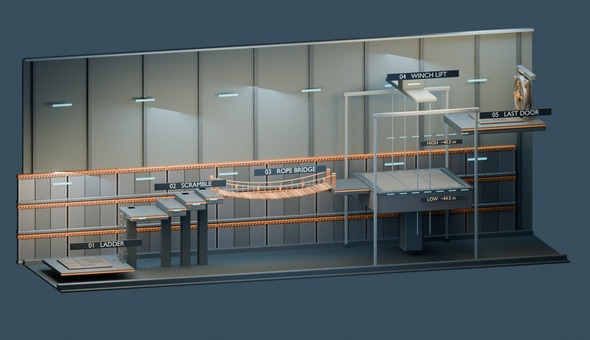
Side section · route and proposed landing heights Entry-height view · the first ladder and upper ledges
Entry-height view · the first ladder and upper ledges Raised pose · the deck moves; the fixed frame stays at the lower mark
Raised pose · the deck moves; the fixed frame stays at the lower markPlacement and envelope proof (JSON) · Room 1 puzzle · Portal art
Blender · WSC-KIT-008 · E10d Room 4 art
Training Vault: the Lockdown chamber
A standalone sealed room for the fourth Vault study. The 12 m wall reference ring, linked metal plates, round bulkheads and paired wall hatches leave the floor clear. Five amber inserts mark the warning stripe; the camera and room lights are identical in both views.
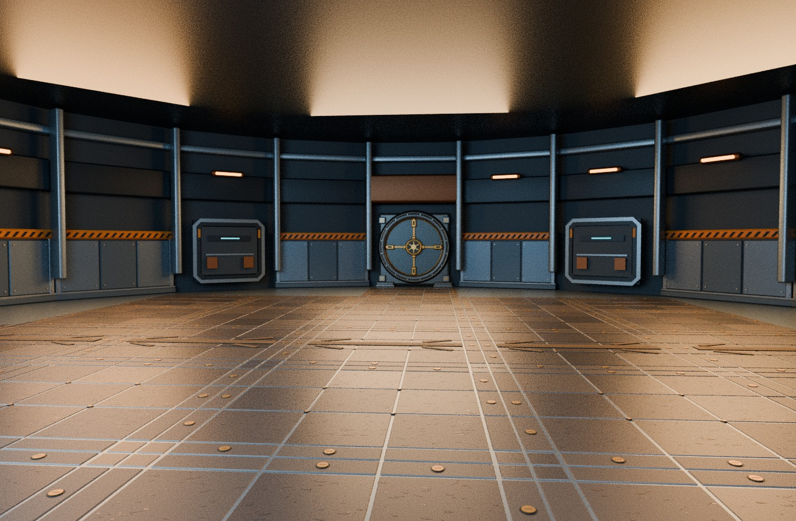
Idle · Inset stripes are dark, with fixed wall and floor lighting.
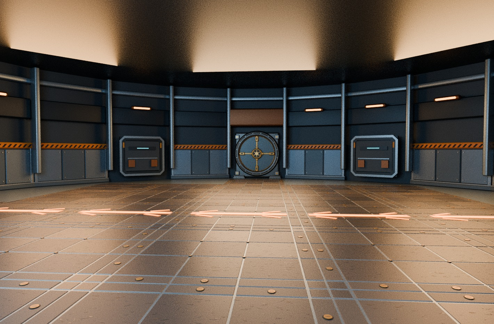
Warning · Only the insert material changes.
Sealed hatch GLB (18,896 B) · Warning tile insert GLB (8,780 B) · Rebuild source and fit checks. No encounter, hazards, native placement or connection to Room 3.
Blender · E10c / D41 · Room 2 art proposal
Training Vault: the room between puzzle and climb
Room 2 reuses 25 original floor plates, linked wall bays and the existing open round bulkhead. An added threshold meets the unchanged Room 3 entry tread. The joining surfaces matched at all three sampled positions, with a deliberate 3 mm seam at the tread. This is a geometric art check, not movement or collision validation.
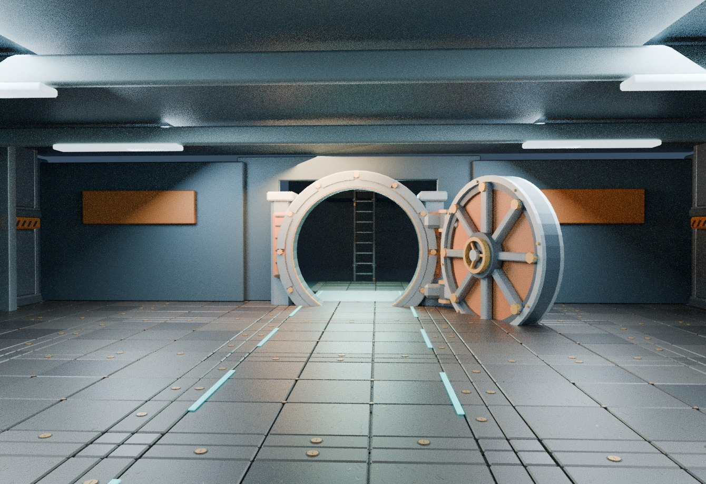
Room 2 floor · 1.70 m eye height, looking toward the climb.
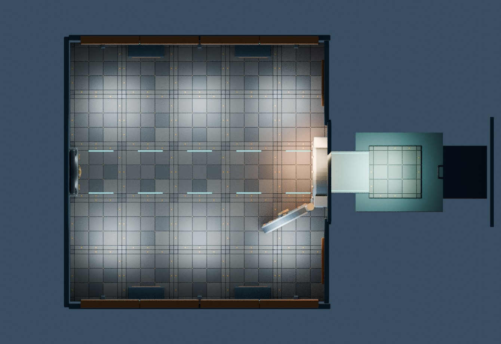
Roof off · the center line crosses the middle row instead of a long seam.
Threshold GLB · 5,820 bytes / 48 triangles. Only the new three-material transition pieces are in the download; donor parts are linked in the Blender recipe. Layout is proposed. No native placement, Room 1 connection, operating doors, enemies or waves. Rebuild and fit checks · Room 3 section.
Blender · W5a · Modular terrain extraction
Hover Park: bowl, four-ramp funbox, and facing quarters
Three reusable terrain GLBs extracted from the existing park scene. A single quarter pipe fills both original slots; the second is rotated 180°. The 24 m bowl inner lip, 1.8 m funbox top and source quarter curves stay in place. The orange D7 launch walls are a separate module.
The three downloads total 83,724 bytes and 1,464 triangles. Blender reimport verified the material and geometry match to the source, with only zero-area faces removed. Ground, paint lines and trees are for the render. This covers the south portion of the park only and does not validate park routing, collision, board motion, scoring or performance.
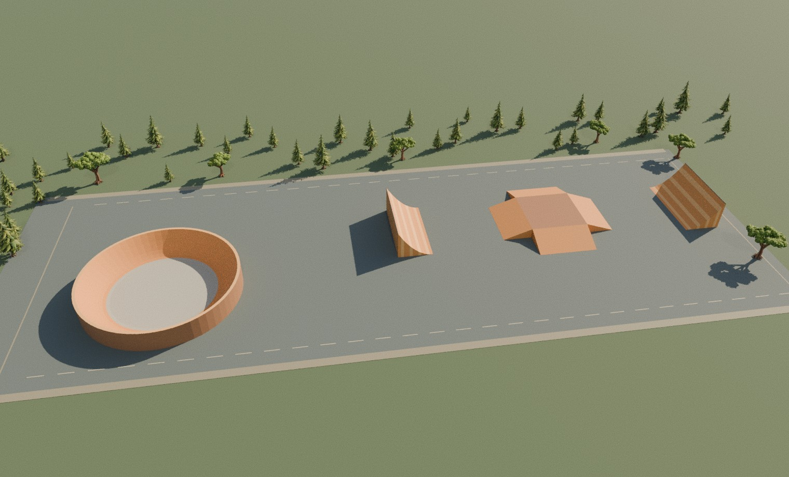
All four placements, built from three exports. Closer view of the 24 m bowl and its graded inner transition.
Closer view of the 24 m bowl and its graded inner transition.Bowl GLB · Funbox GLB · Quarter-pipe GLB · Measurements and placements
D7 launch walls · Separate rail kit · Full park staging · Physics Yard and path art
Blender · E06 · Distance model
Orange East yard wall: twelve folds at distance
The simplified bay preserves the original footprint and ground pivot, all twelve pressed folds, and the rear brace silhouette. The original stays available for close-ups. The distance GLB has 1,140 triangles and one material with no textures, down from 9,436 triangles and four materials. The raw model shrank from 821,832 to 82,780 bytes.
Five copies use a 2.375 m pitch. The shoes meet; the upper uprights still have a 102 mm gap. Front and rear pairs share framing and light. No automatic LOD switching, collision, native placement or device performance has been tested.
Front · Original GLB reimport Front · Distance GLB reimport
Front · Distance GLB reimport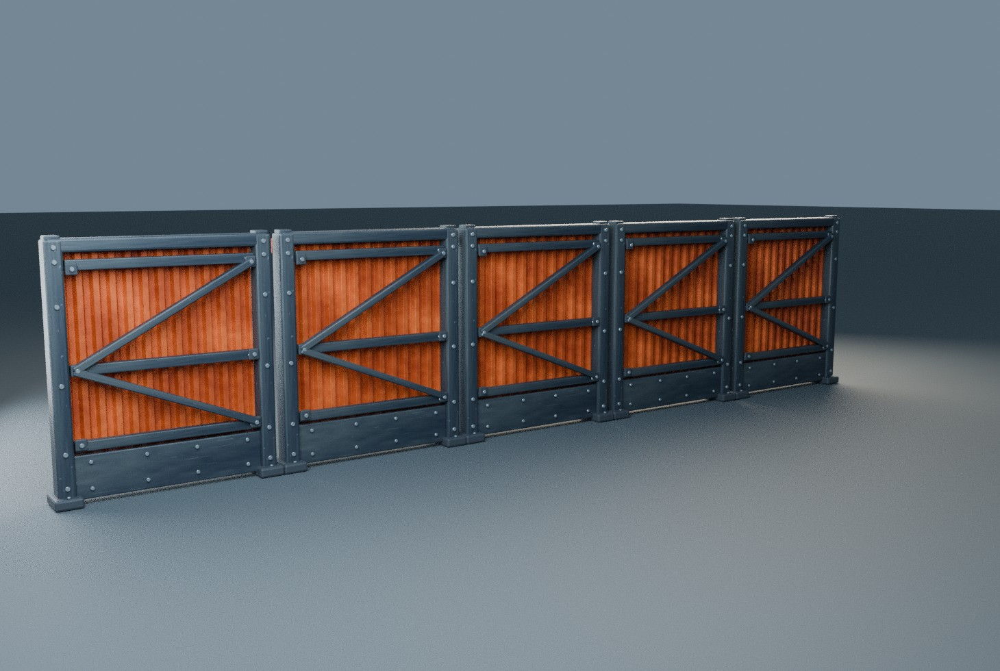
Rear · Original GLB reimport Rear · Distance GLB reimport
Rear · Distance GLB reimport Download the distance GLB · Geometry and placement proof (JSON) · Original close reimport
W2a / E1e · Item art and PACK readability
Six salvage parts from the East workshops
The six-item family connects the robot bands to Tinker Rook. Servo follows the existing visual recipe, Tine is an extracted Pallet Jack fork, and Rotor, Nozzle, Rivet plate and Arc coil are labeled concepts. The original PACK mockup informed the icon-scale test, not the 3D geometry.
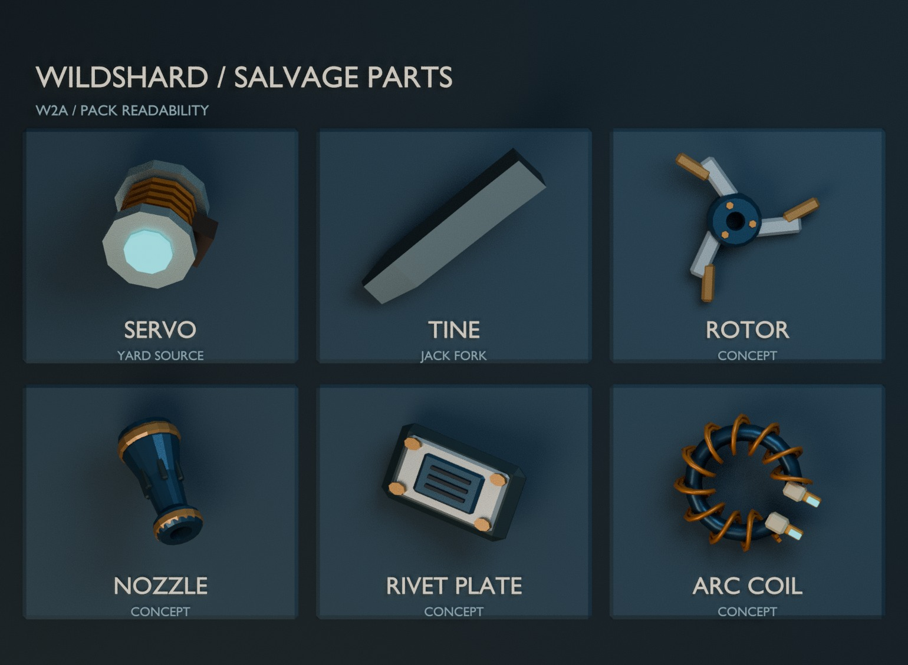
Six recognizable forms; display sizes are normalized. Same camera orientations, in silhouette.
Same camera orientations, in silhouette.Six named meshes in one GLB (242 KB) · Blender rebuild and 48 px check. This does not add robot drops, inventory icons, or shop interactions to the game.
See both vendors together at their original positions.
Blender · W04 and W2b · Rig and scene study
Tinker Rook at his street counter
See the six salvage parts for a separate stock-art study. It is not hooked up to this counter.
Rook wears a leather work apron, twin pockets and an amber visor on the shared 21-joint town rig. The downloadable model is one 4,692-triangle skin with a 3-second studio idle. It weighs 150,112 bytes and requires a Meshopt decoder.
The street composition keeps the existing shopfront closed. The same awning, wrench sign and counter from the town kit sit outside. This is a staging study, not a walk-in interior or a working shop.
 Street view · existing storefront and props, with Rook at the counter.
Street view · existing storefront and props, with Rook at the counter.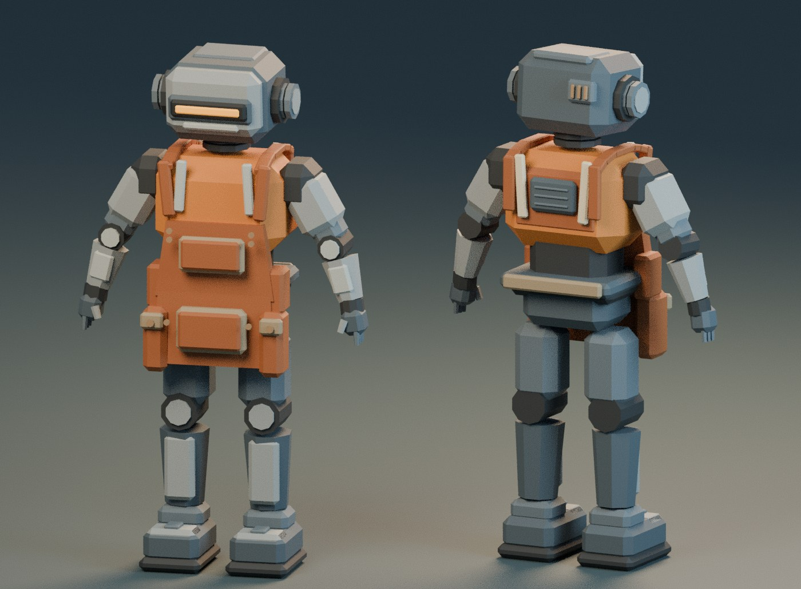
Reimported skin · apron pockets, rear harness and maker plate. At the counter · staged art only; no trade panel, recipes, prices or dialogue.
At the counter · staged art only; no trade panel, recipes, prices or dialogue.Download the rigged GLB · Placement JSON · Original storefront study
Blender · W10a · Paddock-to-oval study
West Paddock: mark the way to the oval
The opening and 14 m fence run follow the archived Round 5 paddock. The linked fence modules leave 11.67 m between their widest posts; the two petrol-blue signs stand outside the lane. The surface beyond the exit is context, not a connection to the newer R02 course.
One reusable waymarker GLB · 16,048 B / 165 triangles. Blender recipe and measurements. No mounted traversal, lap trigger or native placement.
See the separate Round 5 paddock exit study.
Blender · W10b · Placement study
West oval: eight rings and four jumps
The 479 m oval reuses the start gantry, the static timer, the fence and the existing jump hardware. One ring mesh supplies all eight placements. The original opening is 2.636 m; the 1.73× comparison restores the old 4.56 m visual opening but leaves the lower arc visibly suspended. The 4.1 m jump poles stay at their authored size, not the older 10 m proxy. This is an art check, not a timed ride or a clearance test.
 Mounted-height view. The lower arc is present; the track has no gameplay collision here.
Mounted-height view. The lower arc is present; the track has no gameplay collision here. Gantry and static timer as seen from the approach. The digits are built into the model.
Gantry and static timer as seen from the approach. The digits are built into the model.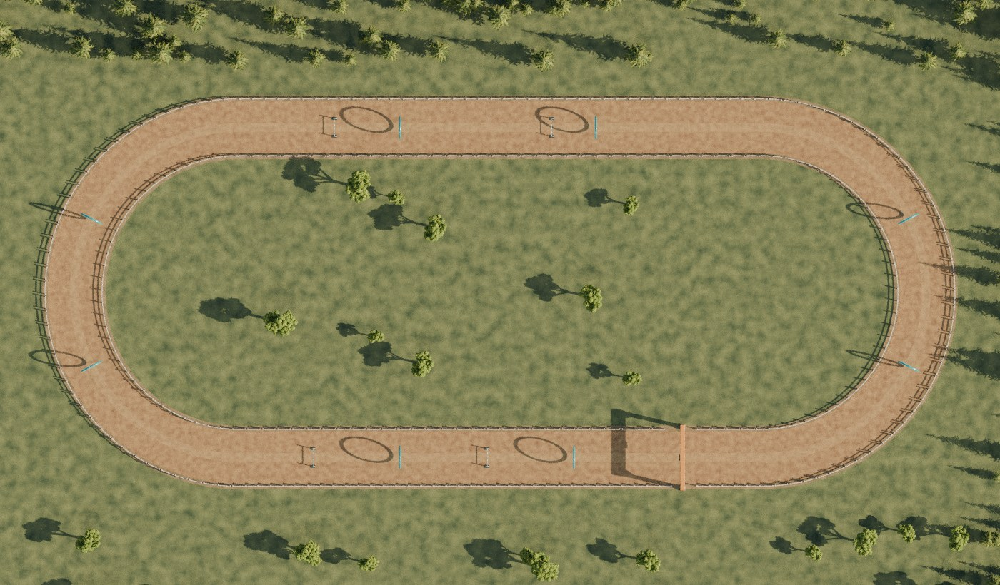
Whole oval rendered in Blender. Open the plan below to locate each placement.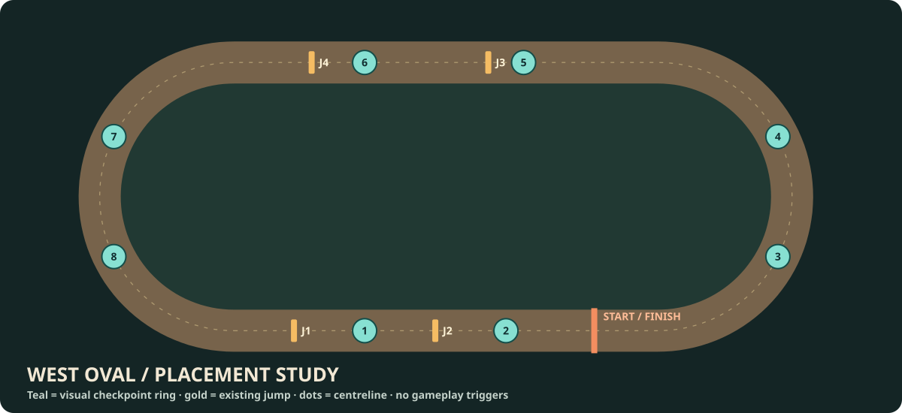
Numbers identify placement slots, not the race order. No checkpoint volumes are implemented.Placement coordinates and donor dimensions (JSON) · Original ring · Original timer · Original jump
See the Gold pickup fit inside the cave.
Blender · W9a · Static exploration study
The Rock: squeeze cave and daylight shaft
This 60 m section runs from the south mouth at Hover Park (left) to the north mouth at West Avenue (right). Two proposed 22 m descents meet at Y −6. The shaft lights the north chamber before a 4 m stretch with a 1.1 m candidate ceiling.
 Section model. The clipped source crag is a backdrop; the actual terrain is untouched.
Section model. The clipped source crag is a backdrop; the actual terrain is untouched.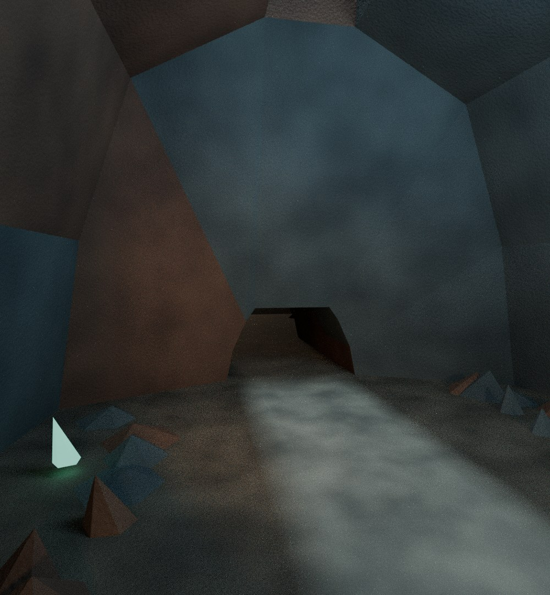
View from the north chamber into the squeeze. No player or runtime build.Original decorative cave mouth · Original summit bench and vista. The original mesh is a recess, not the hollow trim shown in this study.
Blender · W9a/W9b · Static placement study
The Rock: Gold in the shaft chamber
At the archived point the original one-metre Gold cube sticks 0.4 m through the squeeze roof. In this proposal it sits four metres before the squeeze, 1.3 m clear of the route centerline at its nearest edge. The half-metre hover is unchanged.
 Player-height art camera, with light from the shaft above.
Player-height art camera, with light from the shaft above.
 Two positions of one pickup. Left: archived roof overlap. Right: clear chamber position. Near wall hidden.
Two positions of one pickup. Left: archived roof overlap. Right: clear chamber position. Near wall hidden.
Full cave liner · Original Gold model · Rebuild and overlap checks. No in-game placement or collision changed.
Blender · W9b · Two seated camera studies
West corner vistas: oval bend and bowl rim
The original bench positions hold, including Round 5’s 2 m offset from each discovery marker. A shared 5.58 m flush pad leaves 5.21 m clear of the perimeter loop at NW and 3.21 m at SW. Both seated cameras are 1.48 m above ground. Native discovery and camera code are unchanged.
 Northwest · the riding oval and start gantry.
Northwest · the riding oval and start gantry.
 Southwest · the 3.5 m rim hides the bowl floor. Angling past it preserves the horizon.
Southwest · the 3.5 m rim hides the bowl floor. Angling past it preserves the horizon.
 Approach · the exact bench on its optional reusable pad.
Approach · the exact bench on its optional reusable pad.
Flush pad GLB · 26,036 B / 598 triangles. Blender rebuild and layout checks. Paths, vegetation and lighting are visual staging, not proposed changes to native routes.
Blender · W9b · Cosmetic proposals
West cache hoverboard finishes
Oval Ochre, Rock Jade, Alley Violet, and North Frost are four possible cosmetic rewards. The original board and default cyan materials are unchanged. None of these finishes has been assigned to a chest or wired into the game.
 Top: four variants selected from the same exported asset.
Top: four variants selected from the same exported asset.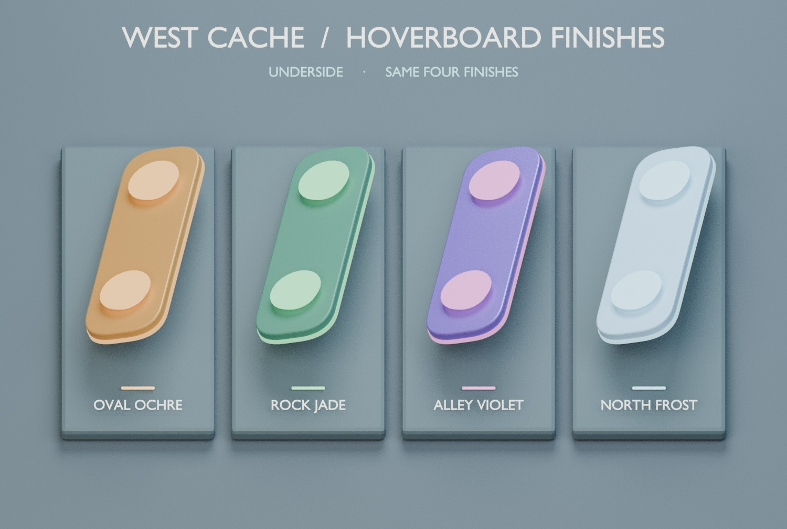
Underside: static repulsor colors, not the live pulse.Variant-enabled GLB · 126,860 B, including all four material mappings. It shares one unchanged 1,232-triangle geometry payload. Viewers without material-variant support show the default board. Rebuild notes.
Blender · W6a · Moving-platform blockout
Movers Station 4: disc and sweep arm
The existing 9 m disc and sweep arm now export with independent pivots. A separate fixed collar fills the 30 cm gap under the disc; the original course scene is unchanged.
 Neutral and adjusted poses from the same reimport. The disc turns 45° and the arm 115° in the test. Turquoise markings are preview-only.
Neutral and adjusted poses from the same reimport. The disc turns 45° and the arm 115° in the test. Turquoise markings are preview-only.Spinner GLB · 75,812 bytes · 1,176 triangles. Pivot and dimensions · Original full course study · Rebuild notes.
Static GLB with movable nodes. No baked speed, collision, deck carry, arm impulses or course behavior tested.
Blender · W1a · Rigged noncombat studies
West Plaza: the quest-giver trio
Yard Boss (L1–6) and Shift Boss (L13–20) join the existing Surveyor (L7–12). The lineup follows the original W01 mockup. Shift Boss is a town quest giver, not the hostile Shift Supervisor.
 Corrected plaza at the original 1.7 m eye height. Yard Boss alone has the gold marker in this staged level-one view.
Corrected plaza at the original 1.7 m eye height. Yard Boss alone has the gold marker in this staged level-one view. W1b · A separate bronze fascia labels the quest-giver board. The contracts board shown in the blue-hour study remains separate.
W1b · A separate bronze fascia labels the quest-giver board. The contracts board shown in the blue-hour study remains separate.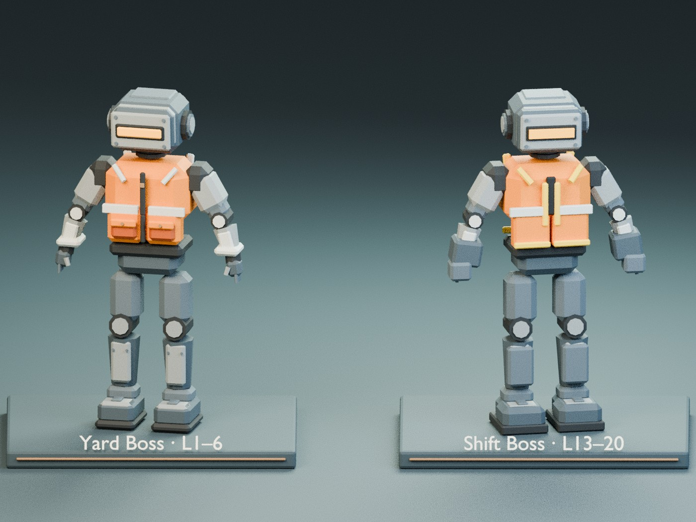
Front · Zip and pockets on Yard Boss; bright vest edging and heavy cuffs on Shift Boss.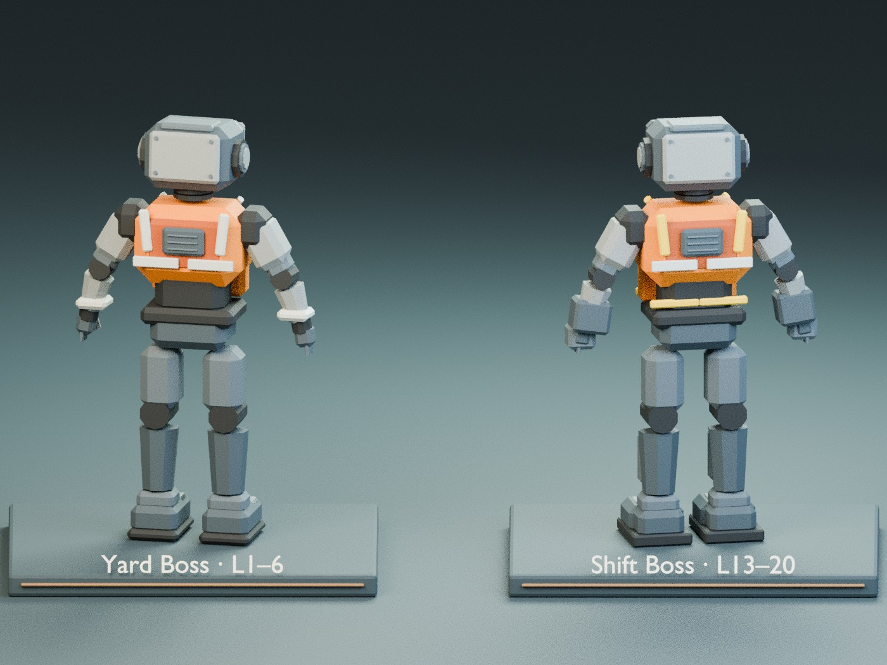
Back · The same reimported GLBs turned around.Yard Boss GLB: 129,404 bytes, 3,992 triangles. Shift Boss GLB: 152,092 bytes, 4,208 triangles. Both use the shared 21-joint rig, one material and one three-second idle; Meshopt decoder required. Neither has native dialogue, placement or quest logic yet.
Source and rebuild notes
Quest Board fascia GLB (72,680 bytes, 1,263 triangles, shared frame not included) · Earlier view with the borrowed title · Rebuild notes. This is a visual correction, not a quest implementation.
Blender · W1a · Rigged town NPC study
West Plaza: the Surveyor
The Surveyor shares the stable hand and weapons keeper’s 21-joint rig and color atlas. Reflective tape, a temple optic and a survey slate distinguish the new vest. The optic and slate are costume pieces.
 Decoded and reimported in Blender: 3,920 triangles, one material, one 3-second idle.
Decoded and reimported in Blender: 3,920 triangles, one material, one 3-second idle.Packed Surveyor GLB · 129,432 bytes · Meshopt decoder required. Other town bots · Source and rebuild notes. No dialogue, native figure wiring or placement.
Blender · WSC-KIT-006 · E5b patrol lamp cue
Stealth yard: read the lamp sweep on the floor
One eye-height camera and the same floor, cover and shadows. An amber footprint marks the patrol lamp in the second frame. The edge and far arc fade into the concrete so the floor markings remain readable.
 Existing shadow study, without the sweep.
Existing shadow study, without the sweep.
 Same camera and light, with the static sweep.
Same camera and light, with the static sweep.
Download the unlit sweep GLB · 9,008 B / 312 triangles. Rebuild and import checks. This is normal alpha blending, not a light source, animated patrol or vision volume.
See the separate patrol lamp footprint on the same floor.
Blender · E5b · Lighting readability test
East container yard: shadow pools
The same yard with the pool decals on and off. The container, cover, fence, floodlight and shed are existing GLBs. Dynamic cast shadows are disabled in both frames to isolate the effect of the reusable decal.
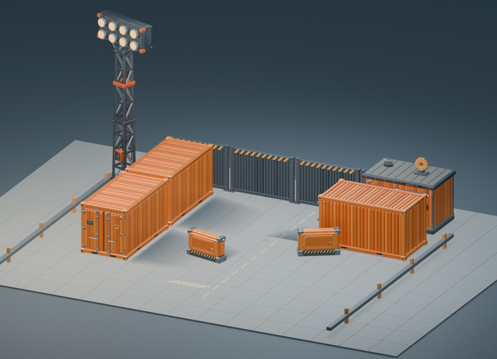
Shadow pools on. Each marked patch uses the same vertex-alpha mesh. Shadow pools off. Same camera, fill lighting and props.
Shadow pools off. Same camera, fill lighting and props.Decal GLB · 6,808 B, 220 triangles, no textures. Placement and donor measurements · Rebuild notes · Desk and keycard.
Studio layout only. The decals do not make the player hidden; no patrol, collision, quest, or phone performance tested.
Blender · E13 · Band 6 placement check
East payout chest: clear the half-wall
At the first archived Band 6 anchor, the existing chest clips the short wall return. Moving it 0.60 m along world Z clears the proxy by 123 mm along the return's axis, measured against the reimported chest mesh. The chest, wall, camera and light stay unchanged.
 Archived position · chest and return intersect.
Archived position · chest and return intersect.
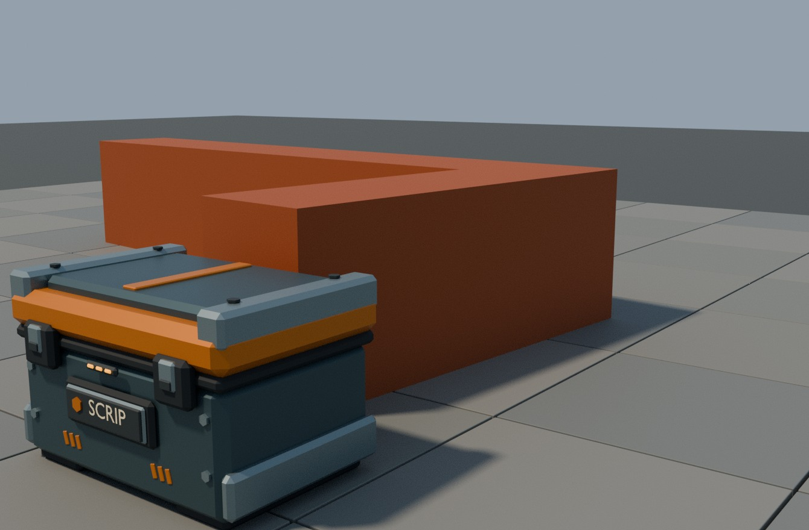
Proposed offset · zero intersecting triangle pairs.
Original chest model and Band 1 study · Placement record and Blender source. This compares one static art placement, not a change to the level or reward logic.
See the Band 6 half-wall fit.
Blender · E1d / E13 · East reward prop
Band 1: Scrip payout chest
A low steel case with an amber lid and a physical SCRIP plaque, separate from the West cosmetic cache. The 1.4 m-wide shell is 1.0 m deep and 0.9 m high; the archived proxy is 0.9 m deep and 1.0 m high. E1d calls for 15 Scrip per chest; the shell does not hard-code an amount.
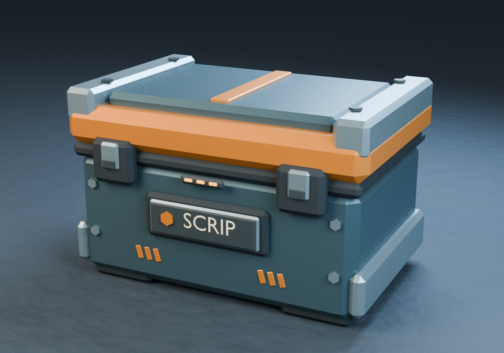
Detail · Amber lid, physical badge and status lights; static closed model.
 1.7 m approach · Both Round 5 chest-to-cover offsets are preserved; the crate, terrain and facing are staging.
1.7 m approach · Both Round 5 chest-to-cover offsets are preserved; the crate, terrain and facing are staging.
Chest GLB · 128,684 bytes / 1,695 triangles / no textures. Rebuild notes. No opening, payout or placement was added to the game.
Blender · W9b · Articulation study
West cache chest: opening lid
The cyan-seal chest keeps the original closed dimensions. The rear hinge now moves the lid and upper latch; the lock and base stay put. Inside is an empty lined tray.
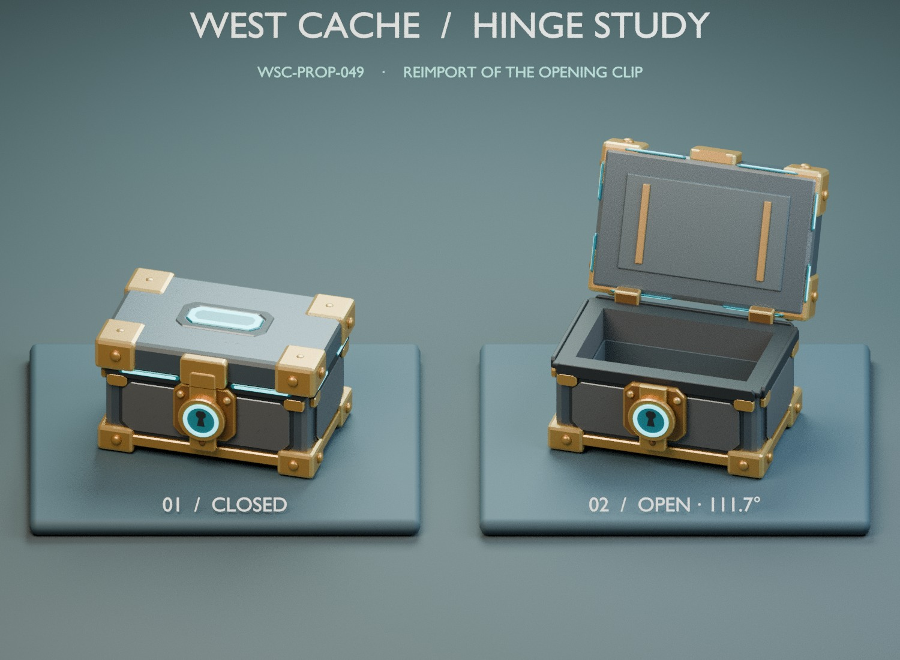
Two moments from the reimported 1.17 s opening clip. The lid opens 111.7°. Test overlaps persist at the seated seam and hinge; this is not a collision result.Opening GLB · 497,608 bytes · 17,842 triangles · Reimport measurements · Original chest · Rebuild notes.
The packed opening file requires glTF mesh quantization. No loot, cache placement or game flag wiring was tested.
Blender · W11a / E9 · Effects tests
Storm Hour: rain and pavement splash
Two separate, texture-free assets: a static 6 × 6 × 4 m stamp of wind-slanted streaks and a short animated pavement splash. The frame uses the unchanged beacon and charged lamp as a warm reference.
 Blender study with instanced rain and frozen splash samples. Wet paving, background and lights are studio dressing.
Blender study with instanced rain and frozen splash samples. Wet paving, background and lights are studio dressing.Rain tile GLB · 17,680 B · 304 triangles. Splash GLB · 8,304 B · 104 triangles · 0.833 s animation. Original beacon · Rebuild notes.
No runtime rain movement, surface detection, weather scheduling, mobile performance check, or Lights Out integration.
Blender · W11a · Reimported motion test
Course flag: wind loop
The 2.5-second clip animates only the existing orange cloth, hem and hoist; the original pole and hardware stay unchanged. Use it instead of the three static cloth meshes at the same model transform.
 Frames 0, 17 and 35 from the exact reimport. The clip’s first and last poses match.
Frames 0, 17 and 35 from the exact reimport. The clip’s first and last poses match.Animated cloth GLB · 204,108 B · 2,168 cloth triangles. Original flag · Rebuild notes. No live wind coupling or mobile benchmark.
Blender · West W7a · Traversal art study
West grapple: one reusable hoop
The cyan hoop and mint channel are separated from the existing post without remodeling. The origin is now the center of the ring; local glTF +Z faces front. The short roof mount is a Blender placement example, not part of the GLB.
 Exact geometry reimport: 2,112 triangles; 40,196 bytes.
Exact geometry reimport: 2,112 triangles; 40,196 bytes. Moving the roof reference from the old center to the rim reduces its distance from pole 2 from 51.05 m to 37.02 m. The mast and tower references remain 41.03 m apart. These are not takeoff-eye distances or sightline tests. W7b zip attachments are unchanged.
Moving the roof reference from the old center to the rim reduces its distance from pole 2 from 51.05 m to 37.02 m. The mast and tower references remain 41.03 m apart. These are not takeoff-eye distances or sightline tests. W7b zip attachments are unchanged.Hoop GLB · Placement study JSON · Blender rebuild notes
Blender · E10c · Room study
Training Vault: two-plate puzzle room
Room 1 uses the existing round bulkhead, floor plates, industrial bays, pressure plate and crate. The amber and green indicators show the empty and weighted plates while the door stays locked. No physics or room logic is included.
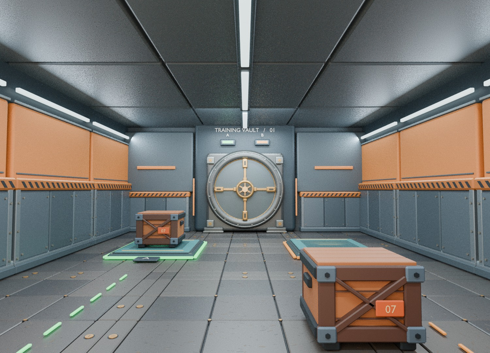
Entry camera. The color strips by the door repeat the status of each plate. Cutaway. The clear gap between the pressure plate frames is 2.4 m.
Cutaway. The clear gap between the pressure plate frames is 2.4 m.Indicator GLB · 58,132 bytes · Placement manifest · Blender rebuild notes
Blender · E03 · Distance model
East plant pot: near and far
The original dark pot and broad leaves are unchanged. For distance, a new vertex-colored model keeps the overall shape in one glTF primitive, with no textures.
 11,068 triangles near; 680 far. The game does not switch between these models yet.
11,068 triangles near; 680 far. The game does not switch between these models yet.Original GLB · 232,684 B · Distance GLB · 53,604 B · Blender rebuild notes
Blender · W10 paddock · Coat study
Biscuit: two coat directions
Amber Bay and Winter Dun are palette studies rendered on the existing Nalati saddled horse. Both preserve the 24-joint rig and 5,000-triangle body. Amber Bay is the warmer starting point. The orange head armor from the riding mockup is not part of this study.
 Actual Blender reimports. No gaits, mounting, or in-game deployment tested.
Actual Blender reimports. No gaits, mounting, or in-game deployment tested.The derived test models were 285–286 kB, over the proposed 180 kB budget. Source and rebuild notes
Blender · W01 street furniture · Static art
One lantern, two mounts
The existing forged wall lantern stays unchanged. A new floor-standing post has a flat mounting face that accepts the same model. The Blender reimport verifies the fit; no placement or game lighting was changed.
Post GLB · 37,232 bytes · 620 triangles. Existing lantern GLB · 206,356 bytes. Place the lantern at (0, 2.27, 0.182) m in the post’s glTF coordinates.
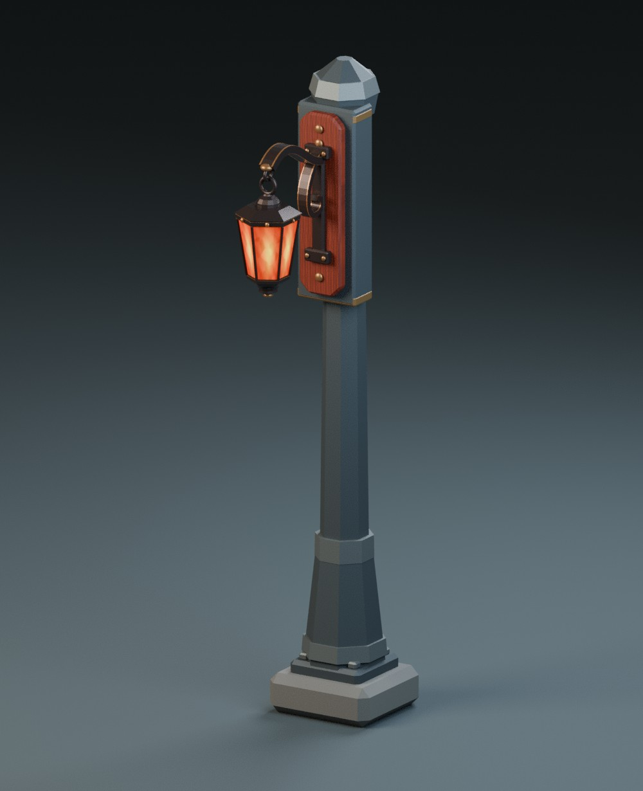
The separately exported post and original lantern, reimported together.
Blender · WSC-PROP-005 · Cloth animation study
The market awning in a light breeze
The existing freestanding stall keeps the same rigid frame and fabric at rest. Its stripe panels and scalloped hem have one three-second keyframed loop. The two shown peaks are about 13 cm apart at the most mobile point. This is not the separate shop-door awning or live wind.
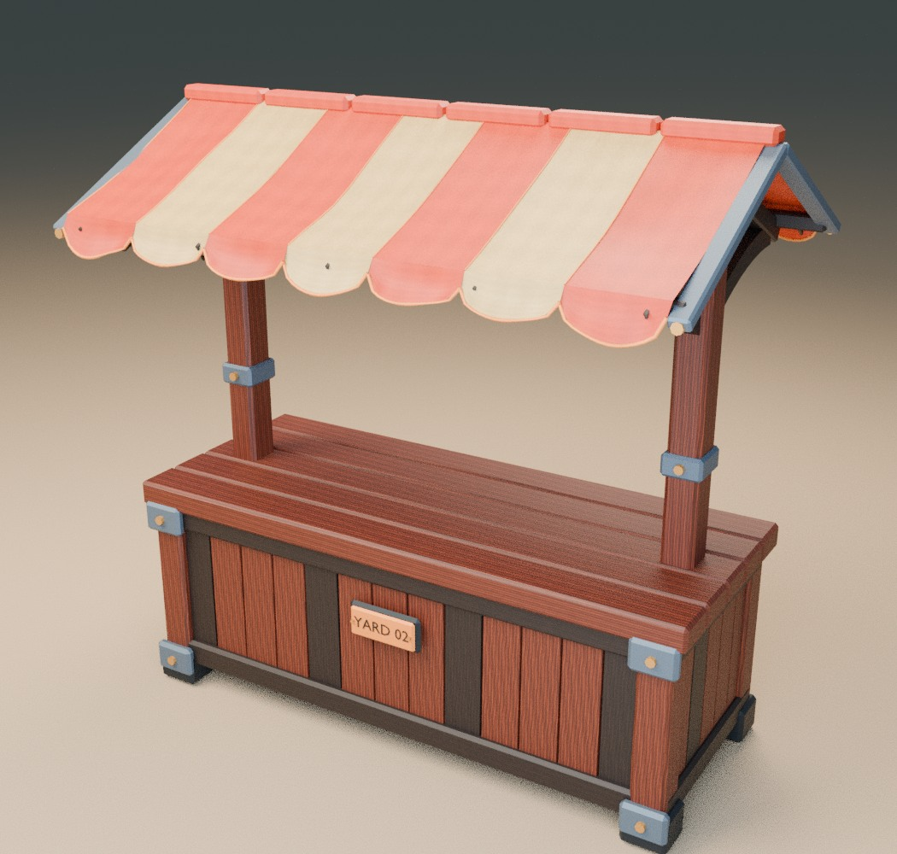
Original stall frame with the moving canopy sampled at the first peak.
 Frame 22 · Hem lifts.
Frame 22 · Hem lifts.
 Frame 46 · The hem settles past neutral.
Frame 46 · The hem settles past neutral.
Animated canopy GLB · 269,708 bytes, 5,976 triangles. Replacement cloth only; no stand included. Rebuild notes · Original static stall.
Blender · E11c Gauntlet C2 · Static art
Gauntlet reveal lift
The 6 × 6 m deck and fixed pit frame are separate downloads. The same deck sits flush in the left view and is translated 4 m up in the right view. Geometry checks confirm 60 mm of clearance per side throughout that vertical travel. The studio base is not exported. No winch motion, banner placement or Supervisor encounter is implemented.
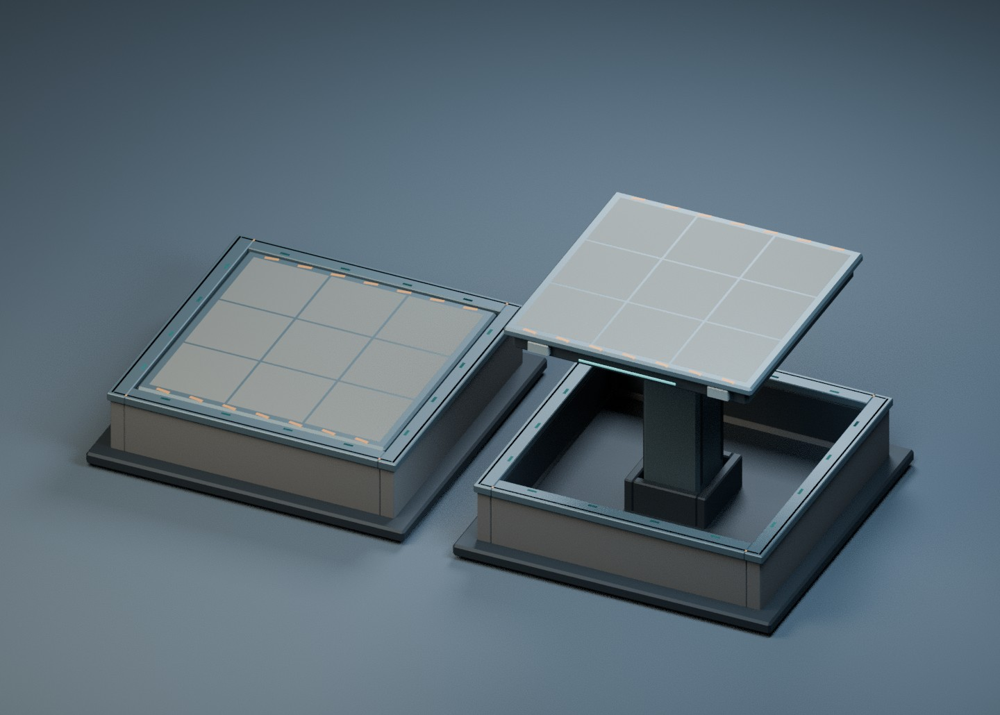
Two exact GLB reimports posed in Blender, not a game or physics test.
View the separate container-yard shadow pool test.
Blender · E5b Stealth Yard · Static prop pair
Foreman’s desk and Vault keycard
The 1.78 m worktop, lamp and ledger form one prop. The card exports separately so it can move independently of the furniture. Its copper edge and keyhole mark echo the Training Vault portal. No shed placement, pick-up behavior, stealth logic or unlock has been implemented.
 Exact export reimport, staged together.
Exact export reimport, staged together. Close-up of the separate pickup model.
Close-up of the separate pickup model.See four optional cache finishes.
Blender · W5a player equipment · Static export
The native hoverboard, top and underside
This is the solid geometry shared by the ridden board and Model Explorer, not a new model based on the W07 crop. The four materials retain steady cyan trim and repulsors. The game's pulse and additive halos aren't part of this static GLB. The runtime board is unchanged.
Download native hoverboard GLB · 122,392 bytes · 1,232 triangles
 Two angles of the exact reimported GLB. The studio stands are not in the download.
Two angles of the exact reimported GLB. The studio stands are not in the download.
Blender · W11a / E9 · Atmosphere study
Storm Hour: a flash beyond the yard
The charged beacon stays warm while a pale fork breaks through the clouds behind the yard. The same camera and exposure show the rest and peak states. Unlike the rain and splash meshes, this is a distant sky cue.
 Rest · Amber beacon against cool storm light.
Rest · Amber beacon against cool storm light.
 Peak · The distant bolt, local cloud glow and cool fill are visible; the beacon did not change.
Peak · The distant bolt, local cloud glow and cool fill are visible; the beacon did not change.
Lightning GLB · 14,324 bytes / 240 triangles. The file holds only the static emissive fork, not the sky, lights, thunder or timing. No native weather changes; only still images here. Rebuild notes.
Blender · E9 · Round 5 placement study
Storm Hour: four corners, one mount
The original 1.4 m stem is too narrow for the detailed beacon’s 2.18 m foot. A shared 2.94 m seat reuses the unscaled beacon and keeps the rim at 20 m on all four archived Band 5 corners. The 2.6 m walls are included; the rest of the stealth yard is not.
 Detailed donor against its new seat.
Detailed donor against its new seat.
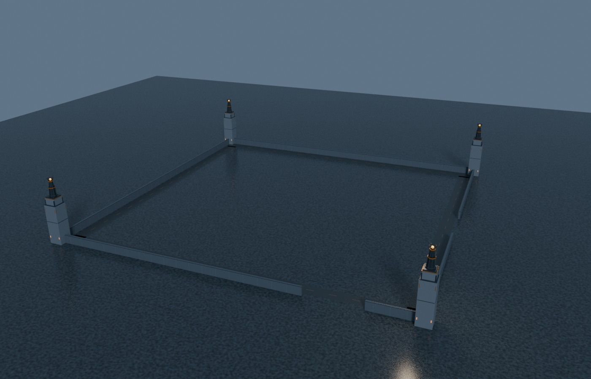
Four charged lamps in the 106 × 104 m boundary study.
Reusable seat GLB · 45,096 B / 496 triangles. Blender rebuild and fit checks. All four sides cleared geometric lamp-to-lamp rays outside the endpoint cages. No Gold perch, weather, quest or native placement is implemented.
Blender · W1a · Original town layout
Main Street: two vendors opposite each other
The Weapons keeper and Tinker Rook keep their original anchors, 7 m apart. The exact Oak counter sits beside the keeper on the level portion of the pavement, not across the kerb. The existing town, rigs, and props are reused.
Pinned donors, measurements and rebuild notes. Static studio poses only. No new rig, store behavior, stock, dialogue or native spawn.
See the original Main Street frontage staging.
Blender · W1a West Town · Rigged art prototypes
Stable hand and weapons keeper
Two role variants of a common town robot with the same body, 21-joint rig, colour atlas and three-second studio idle. The stable hand wears canvas over orange workwear; the keeper wears a blue split coat with copper cuffs. Neither figure has been placed in the game or wired to dialogue or shops.
 Blender render made by reimporting the downloadable GLBs. This is not in-game NPC footage.
Blender render made by reimporting the downloadable GLBs. This is not in-game NPC footage.
Blender · W5a D7 Hover Park · Static geometry
One launch wall, two park placements
The standalone 45 m module was extracted from the existing park build. It runs 9 m from the toe to a 4.5 m design crest. Turning a second instance 180° recreates the other side; the 8 m flat center is separate. This is the nonvertical D7 launch channel, not the historical W07 halfpipe.
Download wall GLB · 76,800 bytes · 1,438 triangles. View the whole park or compare the 2.4 m and 3.6 / 4.8 m kickers. No collision or rideability check.
 Two instances of the exact reimported wall GLB. The flat middle and display base are separate and not in the download.
Two instances of the exact reimported wall GLB. The flat middle and display base are separate and not in the download.
Blender · W5c Hover Park · Static art
Hover Park grind rail family
Three standalone exports under WSC-PLAN-009: a level 12 m rail, a straight funbox descent, and a kinked rail toward the bowl. Each has a continuous steel crown and separate mounts. The existing Hover Park scene, traversal and scoring have not changed.
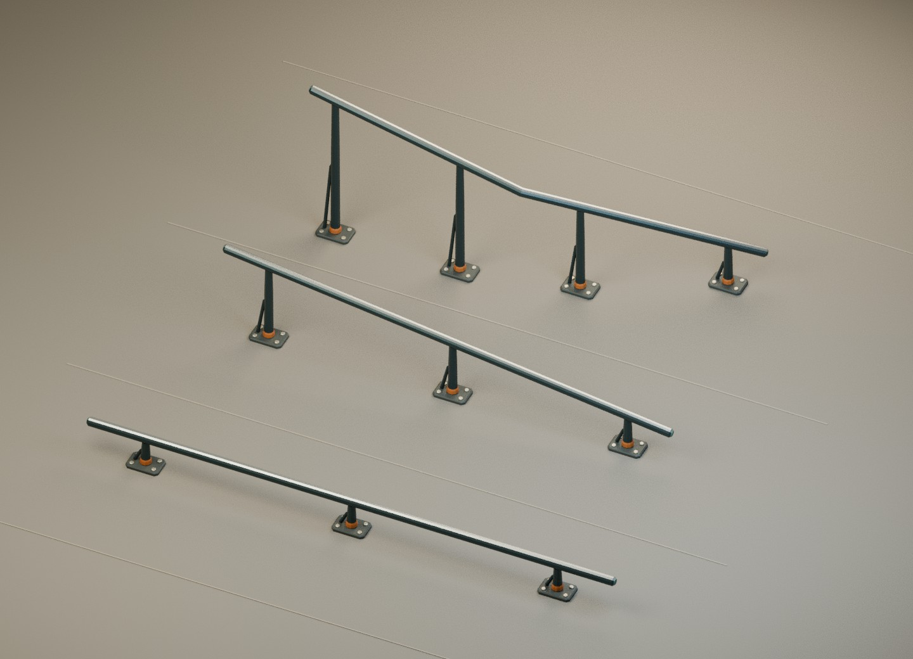
All three exact GLB exports reimported into Blender. Studio spacing is for comparison only.
Blender · E10b · Static modular fixtures
Training Vault: record plate and seal indicator
The entrance plate leaves the best-time field blank until a run exists. The cyan chevron and amber cross distinguish open and sealed by shape as well as color. The exact exterior portal stays at full scale; the plaque clears the outer shell by 26.5 cm.
Editable source and checks · Original portal study. No timer, checkpoint, wave or room-door behavior is wired.
See the record plate and seal indicator.
Blender · E08 architecture · Static art
Training Vault portal
See the active-iris art option for an overlay that leaves this structure intact.
The orange masonry, keyed crest and bolted steel ring frame an open walk-in portal, distinct from the swung door at right. The stairs, sign, banner and open door are previously built assets in this studio composition. The portal swirl, Keycard lock and transfer are not part of this export.
Download portal GLB · 242,196 bytes · 4,688 triangles
 Blender render of reimported GLBs. Existing props are scaled for the presentation, not placed in the game world.
Blender render of reimported GLBs. Existing props are scaled for the presentation, not placed in the game world.
Blender · W4a · D19 plate-gate art
Physics Yard: the grate has two states
Two crates hold the first two plates in both views. The six-bay grate stays closed until the third plate is held, shown with an illustrative footprint. Both views use the reimported yard and the same camera. This is a static study, not a working puzzle or a gate opening animation.
 2 of 3 held · Grate closed.
2 of 3 held · Grate closed.
 3 of 3 held · Opening clear while held.
3 of 3 held · Opening clear while held.
 Detail · The bars and gaps are geometry, not a texture.
Detail · The bars and gaps are geometry, not a texture.
Grate insert GLB · 151,960 B and 2,664 triangles. Fits the existing 19.45 m opening; the surrounding yard is not bundled. Rebuild and check notes.
West Physics Yard · W4a/W4b
Four standalone Physics Yard props
The see-saw, rolling ball, skittle and pressure plate now have separate reusable GLBs. The see-saw axle and plate tread have independent pivots. This is Blender art validation only; there is no hinge physics, gate logic, or scoring in these exports.
Hinged see-saw GLB · Rolling ball GLB · Skittle pin GLB · Pressure plate GLB
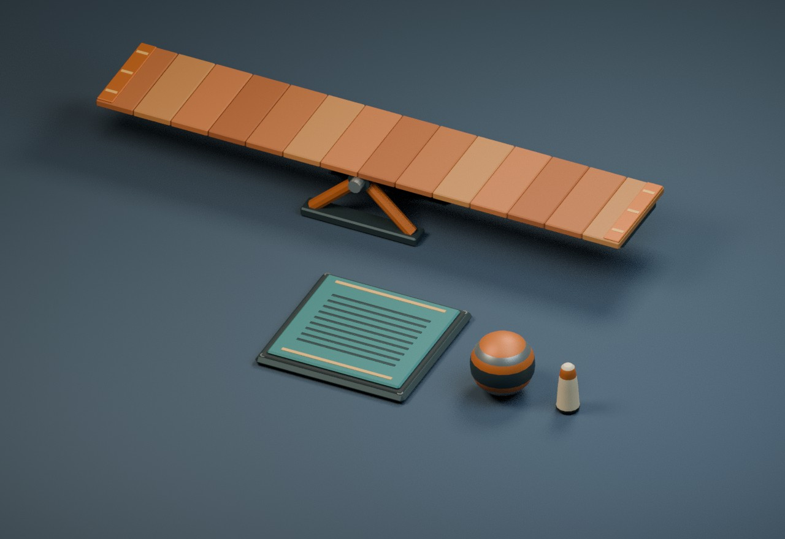
Blender studio render of the exported GLBs, reimported from disk.
WSC-ACTOR-001 · Static study
Crate Mite
Catalogue entry · Model GLB · Phone-budget GLB
 Crate Mite studio and ten-meter scene views · 422 triangles; cyan eye tested in Blender at ten meters without bloom.
Crate Mite studio and ten-meter scene views · 422 triangles; cyan eye tested in Blender at ten meters without bloom. Crate Mite phone-budget pose comparisons · 386 triangles. Ready, crouch and folded poses in 402 × 874 Blender frames. No runtime animation.
Crate Mite phone-budget pose comparisons · 386 triangles. Ready, crouch and folded poses in 402 × 874 Blender frames. No runtime animation.WSC-ACTOR-001 · Rigged combat prototype
Crate Mite rig and breakup
Catalogue entry · Download 386-triangle rig · Download 138-triangle far rig · First-person sword study · See the earlier static study
Two animated tiers share seven joints and eleven clips. The far rig uses 64% fewer triangles; an automatic distance switch is not hooked up. The death clip detaches the lid and legs. The Wildshard client asset loader accepted both rigs in separate test builds. Each build also passed server-side tests for both enemy attacks and the iron-sword kill. The frame strip is from Blender, not native-client footage; no iPhone rendering or showcase release yet.

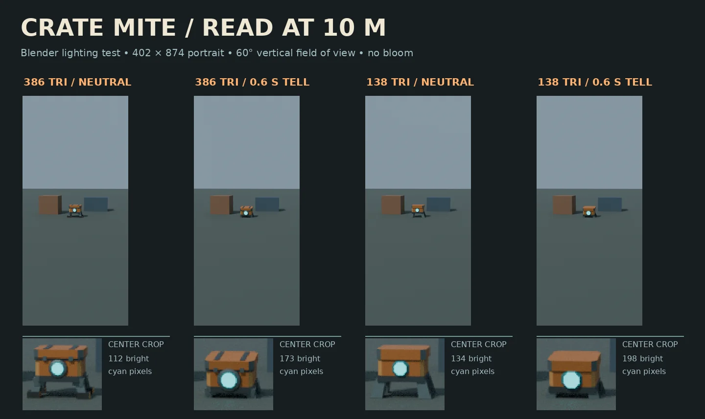
Matched 402 × 874, bloom-free Blender frame test at 10 m. The cyan eye grows and the body crouches. This is not a native-client or iPhone performance test.First-person test yard · Prototype
Iron work sword and gauntlet
The playable Crate Mite prototype now uses an editable 2,560-triangle hand and sword. The windup, strike and follow-through use the same 148 ms damage timing as its standalone simulation. These Blender pictures use the exact demo geometry and pose timing under separate lighting; they are not live or native gameplay footage.
East E01 · Standalone combat timing
Read the eye and counter
The Mite locks its attack line at the cyan warning. The bite gives 600 ms; overclock gives about 767 ms. The eye dims during recovery, and the status text calls out a miss. Scripted tests at 30 and 60 simulation ticks per second dodged and countered each attack without taking damage. A separate headless native-engine test reproduced the sidestep against both attacks, while the stationary controls took damage.
 Matched Blender poses from the playable rig. Standalone timing, not native gameplay footage.
Matched Blender poses from the playable rig. Standalone timing, not native gameplay footage.East E01 · Playable test yard
Crate Mite dock court
The two-meter robot dock sits outside the approach lane. Three recovered haul crates replace the old east cover block. A desktop browser playtest went from waking the Mite to a sword kill and one salvaged Servo. This is a standalone test; it does not place the pieces in the native shard.
Crate Mite rig · First-person sword
 Same court layout and GLB assets, rendered in Blender under different lighting. Not gameplay footage.
Same court layout and GLB assets, rendered in Blender under different lighting. Not gameplay footage.East E01 · Playable scene art
Concrete dock apron
The E01 mockup’s warm concrete, expansion joints and painted arrows replace the placeholder plane in the first-person test yard. The same editable layout supplies 48 slabs, a side drain and worn service markings: 374 triangles with no added texture downloads or collision. The rebuilt yard passed a Chrome sword kill and Servo pickup.
 Same layout and assets in both views. Blender lighting and material bump are not browser footage.
Same layout and assets in both views. Blender lighting and material bump are not browser footage.East E01 · First-person prototype
Portrait combat, first pass
A smaller HUD and rested sword pose leave room for the Mite. The cyan ground cue follows its locked attack direction. The movement stick, dodge and contact sparks are functional. Chrome finished the fight and collected a Servo in a 402 × 874 viewport. This is a Chrome layout test, not iPhone hardware or a native release.
 Before, at entry.
Before, at entry. After, during a bite tell.
After, during a bite tell.East E01 · Portrait animation
Right-side sword contact
A portrait-only swing pose brings the blade toward visible armor on the right without changing reach, damage or timing. The same evaluation still misses fully offscreen enemies.
Browser fallback check: a yaw sweep at the entry and close-bite poses matched the previous pixels. At the close pose, cloud Chrome processed 8,744 fewer triangles and median Canvas rendering fell from 42 to 30 ms. The touch run still cleared the Mite and salvaged the Servo. These are cloud-browser results, not a device benchmark.
 Controlled 150 ms contact frame in 402 × 874 Chrome, not a free-play screenshot.
Controlled 150 ms contact frame in 402 × 874 Chrome, not a free-play screenshot.East E01 · First-person sword
Worn steel on the iron work sword
Bright cutting bevels frame the dark recessed groove. Satin grind lines and a few dull wear marks break up the flat faces. The finish is built into the mesh, with no texture download or change to the swing.
East E01 · Standalone lighting
Grounding the Mite in sunlight
A low, tapered shadow follows the Mite across the slabs. It points away from the same sun used by the dock, stays darkest at contact, and keeps the cyan bite warning visible. This is the software fallback; the WebGL shadow map and combat are unchanged.
 Actual Chrome gameplay at 402 × 874.
Actual Chrome gameplay at 402 × 874.East E01 · Rear wall
Pressed steel behind the Mite
Nine corrugated steel bays replace the flat ribs. The upper edges catch light while the sill stays darker, keeping the YARD 01 plaque and the cyan bite tell easy to pick out. Built from editable geometry with no texture download or change to collision.
 Actual 402 × 874 Chrome gameplay in the software renderer.
Actual 402 × 874 Chrome gameplay in the software renderer.Recessed freight shutter
A closed steel loading bay replaces the center fence beneath the orange gantry. The recessed slats, amber side posts and single service control add depth without competing with the Mite’s cyan bite warning. Combat and collision are unchanged.
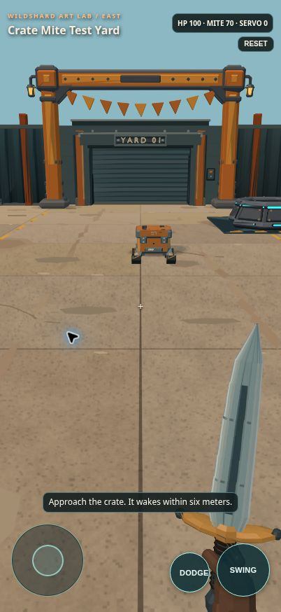
Opening view. Actual 402 × 874 Chrome gameplay. First bite warning. Actual 402 × 874 Chrome gameplay.
First bite warning. Actual 402 × 874 Chrome gameplay.Daylight above East 01
Blue sky grades into a pale horizon with feathered clouds beyond the loading bay. The sky follows turns but does not slide with the player. Its editable texture recipe adds no image downloads to the playable demo.
 Actual 402 × 874 Chrome gameplay on the Canvas renderer.
Actual 402 × 874 Chrome gameplay on the Canvas renderer.East E01 · Portrait composition
Yard 01 stays in frame
The original stencil now sits on a wall-mounted sign beneath the gantry. It stays in frame as the player closes on the Mite and the gantry beam crops out. Camera, combat and the reusable gantry asset are unchanged.
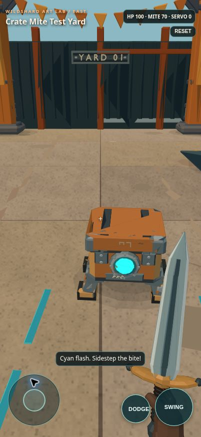
First bite windup in the 402 × 874 Chrome software renderer.East E01 · Playable material study
Concrete grain in the playable yard
Fine aggregate gives the loading apron texture between the larger chips and oil stains. Both browser renderers use the same procedural recipe; there are no texture files to download or extra triangles. The grain fades toward the horizon so the cyan bite warning stays legible.
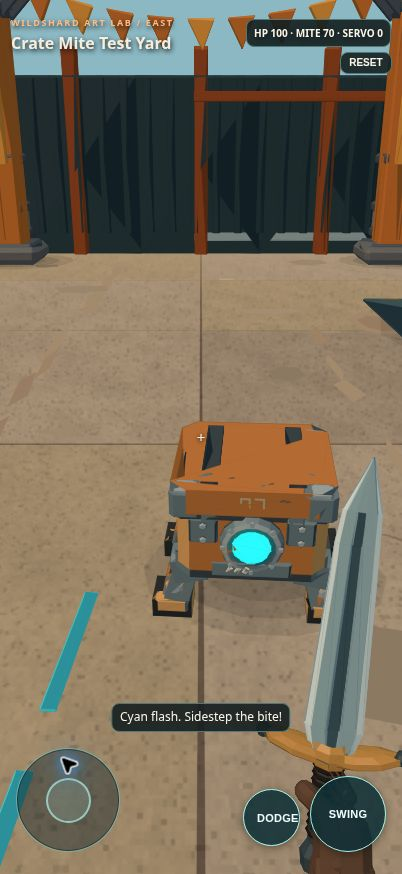
Actual 402 × 874 Chrome gameplay in the software renderer. Browser demo only.East E01 · Concrete wear
Concrete and armor wear
Tapered wheel scuffs, chipped slab edges and older fluid stains give the concrete a loading-yard history. The apron is 806 triangles, with no new texture download or change to combat collision. The browser Mite now has chipped paint and a faded depot stencil, rebuilt from Blender source. Its native tiers are unchanged. The cyan bite tell stays clear against the floor.
 Actual Chrome portrait gameplay at 402 × 874.
Actual Chrome portrait gameplay at 402 × 874. Worn armor in gameplay. The browser build cleared the fight and salvaged the Servo.
Worn armor in gameplay. The browser build cleared the fight and salvaged the Servo.East E01 · Third playable pass
Lighting and touch controls
Warmer sun, cooler shadows and softer steel highlights give the test yard more depth without texture downloads. The camera now keeps its own drag finger. In Chrome at 402 × 874, the on-screen stick and Swing button cleared the Mite and picked up its Servo at 54 HP.
 Bite warning. Actual browser frame.
Bite warning. Actual browser frame.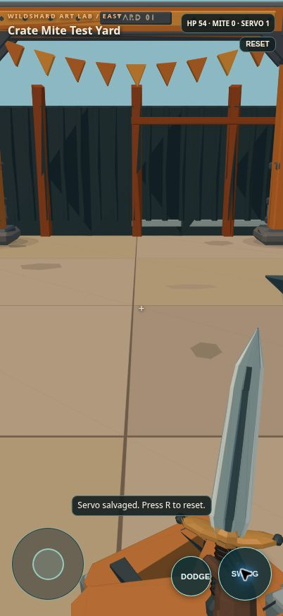
Servo recovered. Actual browser frame.East E01 · Second playable pass
Close-up Crate Mite
The browser yard uses a separate 1,734-triangle Mite with steel axle and knee pins, armor plates, an eye guard and stronger recoil. Software contact shadows ground the Mite and nearby props. The native 386- and 138-triangle assets are unchanged. Chrome at 402 × 874 showed this warning, then completed a sword kill and Servo pickup.
 Actual Chrome capture, not a concept or native-device test.
Actual Chrome capture, not a concept or native-device test.East E01 · Playable scene art
Yard 01 gantry
The recovered road gate adds the original mockup’s orange frame, lanterns and bunting behind the fight. Its feet block movement, the center stays open, and the rear wall remains the boundary of this small standalone test. The lower-detail software renderer preserves the sign and silhouette.
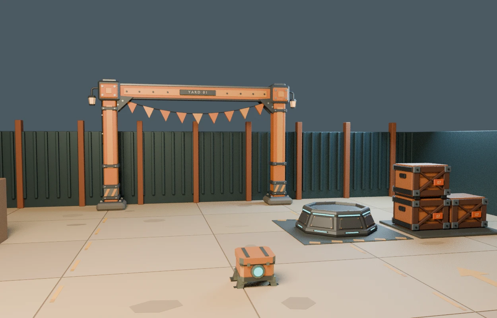
Blender composition using the same yard placement and full gantry model, not gameplay footage.Blender · E2 · Static ground effect
Band 2 red lane: direction by shape
Paired red boundaries and pale chevrons identify the proposed warning lane. The 1.70 × 8.40 m footprint is an art-test size, not a gameplay hitbox. The actor and its planned 0.9-second wind-up are not part of the asset.
 1.7 m eye-height staging with original crate donors.
1.7 m eye-height staging with original crate donors.
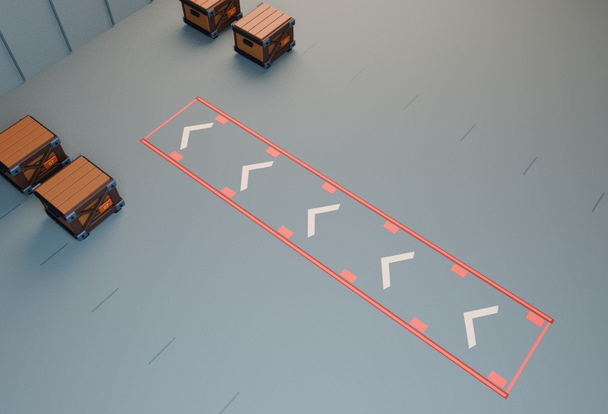
Elevated view · the marked extent and direction.
Static warning GLB · 16,196 B / 56 triangles. Rebuild and reimport checks. No actor, timed transition, trigger, gameplay, or native iPhone test.
Blender · Unpublished static scene
East Threshold
The masonry East Gate and industrial seam are two separate crossings. The inherited masonry opening is 12 m; the industrial opening is 17 m. The visuals show the later East lead-out, not a completed East district. Player fit, collision and runtime behavior are not validated.
 Blender reimport · Overhead of the masonry gate and industrial seam
Blender reimport · Overhead of the masonry gate and industrial seam Blender reimport · Eye-height approach from Town to East
Blender reimport · Eye-height approach from Town to EastRecovery inventory: editable Blender scene (53.5 MB), static GLB export (21.2 MB), build recipe and QA exist separately. No new scene download is attached here.
Blender · Unpublished asset study
East crossing beacon
A separate study, not placed in the East Threshold scene. The editable Blender source, textures and a preliminary 2.2 MB GLB exist separately. No screened reimport image yet: the first export omitted authored tangents, and visual review remains pending. No catalog ID or quality acceptance.
Blender · Whole West · Assembled art WIP
Whole-West orientation
Start with the full West overhead, then follow West Avenue from the perimeter opening toward Town at eye height. Ten district footprints are visible in the assembled West scene. The stills come from the exported scene reimported into Blender. No East or seam art, traversal, collision, physics or runtime performance is validated here.
 Full West overhead · Ten district footprints in a single view
Full West overhead · Ten district footprints in a single view 1.70 m arrival camera · West Avenue toward Town
1.70 m arrival camera · West Avenue toward Town
Blender · West precinct · Assembled art WIP
West Stable Gate, paddock and riding oval
Three Blender views of the assembled scene after reimporting the exported GLB. R02 connects the stable frontage and gate to the paddock and riding oval. It retains the historical 48 × 60 m paddock and 208 × 88 m oval footprints, with eight rings and four jump placements. These are visual checks, not final map approval.
Pedestrian and mounted heights describe the cameras only. No horse animation, gameplay, collision, rider clearance or performance was tested. The landscape and architecture are provisional; reused props are not new catalog assets.
 Overview · Stable frontage, paddock and full riding oval
Overview · Stable frontage, paddock and full riding oval
 1.75 m pedestrian camera · Stable-lane approach
1.75 m pedestrian camera · Stable-lane approach
 2.6 m arrival camera · Mounted-height composition only
2.6 m arrival camera · Mounted-height composition only
Movers Sequence extension
See the separate Station 4 spinner pivot test.
These Blender views show the exported scene after reimport. The static six-station study adds a 98 × 58 m sequence to West R02 and rises to an 18 m deck. Existing stable and riding areas are unchanged. The bridge is absent in this earlier checkpoint.
This is unintegrated art. Motion, timing, jumps, collision, player fit and performance have not been tested.
 Matched overview · Movers Sequence beside the stable and riding precinct
Matched overview · Movers Sequence beside the stable and riding precinct
 1.75 m pedestrian camera · Outside the Movers Gate
1.75 m pedestrian camera · Outside the Movers Gate
Shared-roof bridge and tank junction · Art WIP
Inspect the measured takeoff and landing close-ups.
This later West scene study adds the bridge and tank junction at the upper deck. Both views show the exported scene after reimport into Blender. The geometry is an art WIP, not a traversal or performance pass. Player fit and collision are untested.
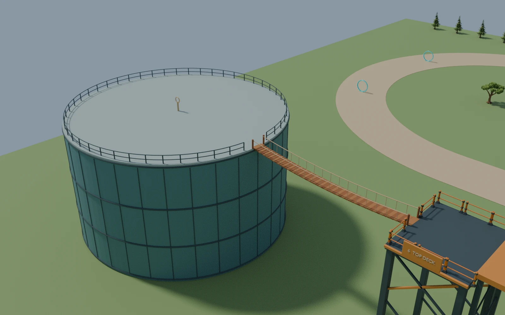
Bridge and tank in context · Shared roof at the West junction
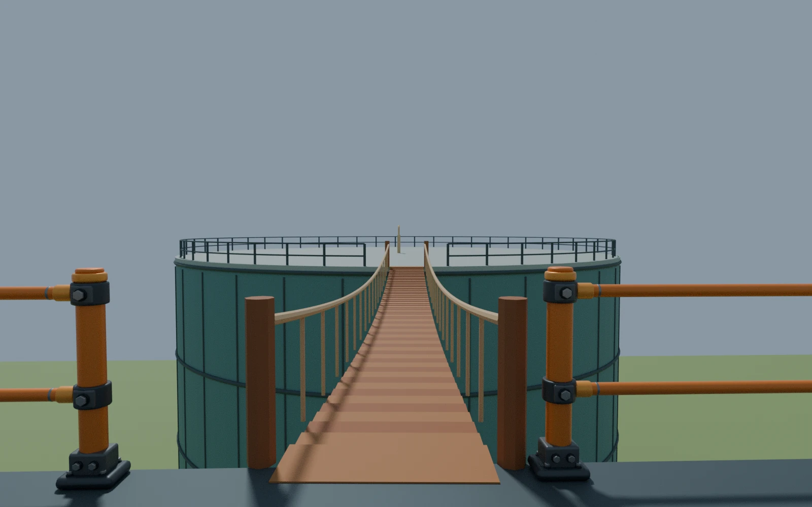
Deck-eye view · The bridge junction and tank access deck
West zipline return · Art WIP
Two Blender views of the exported scene after reimport show the static cable from the summit toward the West Gate roof. The town frontage and street are still blockout. This is a visual cable check only; runtime movement, clearance, collision and performance are not validated. See the finish-pad fit study.
 West return overview · Zipline above the riding and Movers precincts
West return overview · Zipline above the riding and Movers precincts
 Historical West Gate camera · Schematic town frontage and roof arrival
Historical West Gate camera · Schematic town frontage and roof arrival
West zip-house · Seat the finish pad
The original pad floats 86 mm above the deck at its center. Six recessed metal shoes bridge the local 23.5–33.0 mm gaps at their bearing points, without moving the pad, roof, cable, or tie-down. This is a static art fit, not gameplay or collision validation.
 Arrival · Cable, pad, flange and roof stay in their original positions.
Arrival · Cable, pad, flange and roof stay in their original positions.
 Fitting view · Pad hidden to reveal all six recessed shoes.
Fitting view · Pad hidden to reveal all six recessed shoes.
 Before · The pad is visibly separated from the deck.
After · The support is tucked behind the unchanged rim.
Before · The pad is visibly separated from the deck.
After · The support is tucked behind the unchanged rim.
Deck shoes GLB · 21,992 bytes, 288 triangles. This contains the new pieces only. Rebuild and fit checks · Full West route.
West whole-town shell · Art WIP
The town shell adds 35 residences and nine reserved lots, with six gate openings and a 40 × 40 m plaza. The checked West zipline cable is unchanged. Both views show the exported scene after reimport into Blender. This is a static art study, not a gameplay, collision or performance pass.
 Town overview · Walled town, Main Street and preserved West precinct
Town overview · Walled town, Main Street and preserved West precinct
 1.70 m street-eye view · Main Street facades from the historical camera
1.70 m street-eye view · Main Street facades from the historical camera
See the ladder-foot fit · See the W8b Deck A scramble fit.
Climb Yard and The Rock · Art WIP
The West Gate approach leads to an exterior study with three raised yard decks, rope bridges and a 16 m crag. The cave mouths are shallow exterior recesses, not playable interiors. Both views show the exported scene after reimport into Blender. Traversal, collision and runtime performance are not validated.
 Overview · Climb Yard decks and rope bridges beside The Rock
Overview · Climb Yard decks and rope bridges beside The Rock
 West Gate context · The exterior approach to the yard and crag
West Gate context · The exterior approach to the yard and crag
Blender · W8b · Deck A alternate fit
Climb Yard: a scramble face to Deck A
A 70° slab with 24 staggered holds meets the open west edge of the existing 6 m deck. The fit is aligned to plank centers, not a plank seam. It keeps the existing ladder and stepped study unchanged.
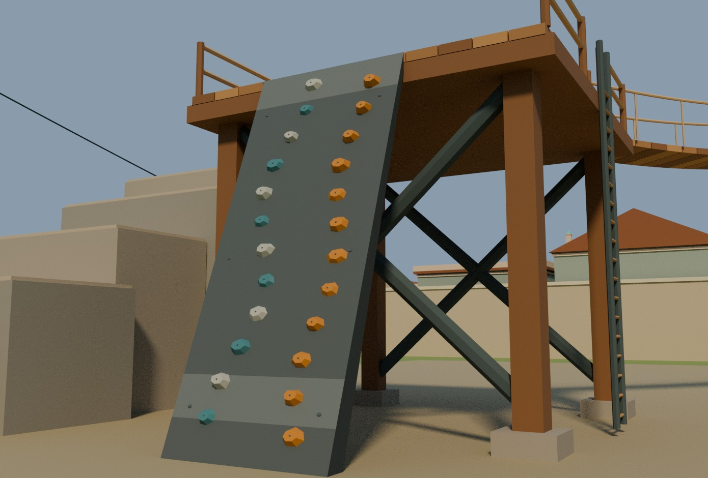
Yard eye line · the slab reaches the deck at 6 m.
Upper fit · the 12 mm seam is deliberate.
Scramble slab GLB · 58,872 B / 1,052 triangles. Blender source and checks. No traversal, collision or Rock pitches.
Climb Yard: one foot for all three ladders
All six rail ends in the exact West Yard rebuild sat 142.5 mm above the terrain. The same cast shoe seats each end. No changes to the ladder rails, rungs, deck positions or exit openings. This is a static art fit, not structural, collision or traversal validation.
Before · A measured gap below both rails.
 Fitted · Two of six identical shoes.
Fitted · Two of six identical shoes.
 Above · Deck A’s exit is unchanged.
Above · Deck A’s exit is unchanged.
One shoe GLB · 18,488 bytes / 308 triangles. Donor scene and geometry are not in the download. Rebuild proof · Original yard study.
Hover Park · Art WIP
This static extension connects Hover Park to the West precinct through Park Gate. Three kicker lanes, two facing launch walls and a bowl sit within the 134 × 122 m park footprint. Both views show the exported scene after reimport into Blender. Riding, collision, gameplay and runtime performance have not been validated.
 Historical 1.70 m park-eye camera · Hover Park and its facing launch walls
Historical 1.70 m park-eye camera · Hover Park and its facing launch walls
 Establishing view · Hover Park looking back toward Park Gate and The Rock
Establishing view · Hover Park looking back toward Park Gate and The Rock
See the D19 grate and plate states.
Physics Yard and Hover Park alley · Art WIP
The 78 × 54 m yard adds static seesaws, a ball ramp and a skittle bank beside the 8 m alley. Both views show the exported scene after reimport into Blender. This is entirely static art: there is no physics simulation, scoring or gameplay validation.
 Wide view · Physics Yard beside Hover Park
Wide view · Physics Yard beside Hover Park
 1.70 m eye-level view · Alley between the two yards
1.70 m eye-level view · Alley between the two yards
Range Gate meadow and approach · Art WIP
This static landscape study connects the town frontage to a pedestrian square, meadow garden and low terrace beside Physics Yard. Both views show the exported scene after reimport into Blender. The landscaping is illustrative; gameplay, traversal, collision and runtime performance are not validated.
 Overview · Town, Range Gate meadow, Hover Park and Physics Yard
Overview · Town, Range Gate meadow, Hover Park and Physics Yard
 Eye-level view · The meadow path leading back to Range Gate
Eye-level view · The meadow path leading back to Range Gate
Blender · W10a · Art WIP
Horse mounting block
Three timber treads on teal cheeks, with dark ground skids and cream nosings. Both images show the exported GLB after reimport into Blender. This is unintegrated art, untested with a rider; mount interaction, placement and collision are not validated.
263,288 raw bytes · 5,264 triangles · embedded materials, no external textures. Download GLB
 First angle showing three timber treads and teal side supports
Reverse angle showing rear support and stepped teal cheek
First angle showing three timber treads and teal side supports
Reverse angle showing rear support and stepped teal cheek
Blender · West riding course · Art WIP
W10 paddock and riding-course props
Two standalone art candidates. These renders show the actual exported GLBs reimported in Blender. Neither model is gameplay-integrated or accepted.
Paddock water trough
Rolled metal rim, inset water, timber stave cladding and small supply pipe. The intended paddock fit has not been tested.
315,976 raw bytes · 6,112 triangles · embedded materials, no external textures. Download GLB
Primary view
Reverse view
Reusable riding jump
One striped pole and braced standards for four future placements. The 4.1 m rail is shorter than the legacy blockout span; placement and horse clearance still need checking.
158,028 raw bytes · 2,560 triangles · embedded materials, no external textures. Download GLB
 Primary view
Primary view
 Reverse view
Reverse view
Blender · WSC-MODULE-007 · Art WIP
Hover Park kicker · 2.4 m class
An actual Blender model for the smallest D7 kicker class. Laminated birch decking sits in orange side channels above an open, braced chassis. This is a one-way kicker, not a launch wall or halfpipe. The historical W07 concept board informed the colors and materials, not the D7 geometry.
The lip is 2.400 m above the ground datum. Proposed footprint: 3.583 m wide × 5.229 m long. The GLB export is 686,048 raw bytes, with 10,732 triangles and 8 draw primitives.
Draft art candidate, not accepted or integrated. Curvature, placement, collision and rideability have not been validated. The cyan run-up is a render backdrop, not part of the model or a level placement. See the earlier graybox comparison or the authored taller candidates.
Eye-height approach
 Studio three-quarter view
Rear service side
Studio three-quarter view
Rear service side
Blender · Art-only diagnostic
Hover Park kicker progression
The authored 2.4 m candidate is unchanged. The 3.6 m and 4.8 m forms on this board are temporary Blender grayboxes, not the later authored taller candidates. In the historical approach camera on an uncluttered field, the three heights read in order, but lip and curvature details were not reliably distinguishable at that distance.
 Historical approach render, closer inspection render and profile diagrams. Tap to enlarge.
Historical approach render, closer inspection render and profile diagrams. Tap to enlarge.With centers and 45 m run-up strips held fixed for the diagnostic, the authored 2.4 m toe does not overlap its strip. The 3.6 m and 4.8 m graybox toes overlap theirs by 0.90 m and 2.20 m respectively. These are geometry measurements under the study setup, not a placement recommendation or a test of gameplay, collision, clearance, or rideability.
Blender · Authored art candidates
Hover Park · Switchback and Gantry
Two authored kickers with orange rails and birch deck panels, distinct from the earlier grayboxes. Switchback uses folded side plates and an open chevron rear; Gantry has a splayed rear tower and a full-height X brace.
For the comparison, the two taller toes were aligned to the end of the historical 45 m strips. This preserved the strip length in the render by moving the taller kickers farther downrange. The 2.4 m candidate stayed in its original test position. This is an art diagnostic, not a placement recommendation, game integration, or a test of at-speed readability, collision or rideability.
 Toe-aligned art diagnostic · Actual Blender renders. Includes the unchanged 2.4 m candidate as a reference; only the taller two are new.
Toe-aligned art diagnostic · Actual Blender renders. Includes the unchanged 2.4 m candidate as a reference; only the taller two are new.Blender · Industrial props · Art candidates
East industrial prop batch
Four standalone art candidates. The dock, caged gooseneck and low barrier are informed by E03/E04/E07. The tall straight-arm lamp uses W03 as its main reference and is distinct from the curved gooseneck and the hanging street lantern. The luminous materials do not implement any light, trigger or docking behavior; no collisions or integration are included.
 Actual GLBs reimported and rendered in Blender.
Actual GLBs reimported and rendered in Blender.Blender · WSC-PROP-020/021 · Material comparison
Timber and hardware: original vs. worn
The spool and barrel keep their original meshes. The worn pass adds fibres along the boards, roughness variation, and oxide on selected iron hardware. Lighting, silhouette and camera stay fixed.
 Original donor materials.
Original donor materials.
 Procedural material proposal on the same meshes.
Procedural material proposal on the same meshes.
Editable shader recipe and geometry check. This is a Blender material study, not a replacement GLB or a baked in-game look.
Compare the original and worn finishes.
Blender · Town props · Art candidates
West town prop batch
Four standalone art candidates: a timber spool with a wound cable, a staved barrel with metal hoops, a double-sided wrench sign and a slatted lookout bench. These are not placed in the level and do not include gameplay or collision setup.
 Actual GLBs reimported and rendered in Blender.
Actual GLBs reimported and rendered in Blender.Individual GLBs on GitHub (repository access required):
Blender · Standalone art studies
Industrial seam modules
One X-braced gate leaf, one seam post and one straight industrial wall bay. The combined view uses two instances of the same leaf; it is not two different exports. M05 supports the distant X-braced silhouette and the post and wall forms, not hinge or attachment details, dimensions, opening motion, or whether the pieces fit. The assembled view is an inferred art comparison, not a level placement, collision test, or prototype promotion. These are distinct from the masonry East Gate.
Reimported GLBs · Isolated parts and an inferred arrangement.
West Physics Yard · W4b · WSC-PLAN-003
See-saw: where the deck hits
The original see-saw clears flat ground by 211 mm in both 10° poses. The reimported mesh showed no intersections outside the axle region at the sampled angles between those poses. At 11.75° in either direction, it hits the orange braces while the deck end is still 4 mm above the floor. At 12°, it hits both. This is a static art check, not a gameplay hinge limit.
 Opposite test poses. No new mesh.
Opposite test poses. No new mesh. Axle and braces at +10°.
Axle and braces at +10°.Test and rebuild notes.
See the separate ground slag study.
Blender · WSC-PROP-057 · Animated visual effect study
Foundry: drifting embers
A three-second ember loop in front of the existing furnace. Eighteen glowing motes reuse two tiny meshes. The original furnace is unchanged; the download contains just the animated effect.
 Reimported animation at 0.67 s.
Reimported animation at 0.67 s. Reimported animation at 2.00 s.
Reimported animation at 2.00 s.Ember loop GLB · 32,312 bytes · One clip with matching endpoints. No native particle system, hazards or lights in the GLB. Rebuild notes.
Blender · E4 · Band 4 foundry scenery
Foundry bay: existing furnace and slag
The entry-facing Round 5 bay keeps its original 3 m wall height and 5.5 m clear mouth. The original floor marker locates the unscaled slag; the furnace placement is an art proposal. The thin outline in the overhead view shows the 2.8 m blockout proxy, not a hazard area.
Six metres from the bay centre · 1.7 m eye height.
 Overview · the exact roughly 1 m decal compared to the original proxy outline.
Overview · the exact roughly 1 m decal compared to the original proxy outline.
Shell GLB · 115,408 B / 1,300 triangles. Source, placement and reimport checks. No actors, world placement, collisions, heat or damage changed.
See the slag in one original foundry bay.
Blender · E4 · Static ground-effect study
Foundry: slag on the floor
A broken hot rim around a dark crust, separate from the airborne furnace embers. The same 1.70 m camera and exposure show the brick stage in daylight and dim light without bloom. From 6 m the roughly 1 m concept projects to about 143 × 37 px at a 402 × 874 reference size. This is a framing check, not a production radius or runtime test.
 Day · Exact same camera and shape as the dim study.
Day · Exact same camera and shape as the dim study.
 Dim · Emission is visible in the image without lighting the ground.
Dim · Emission is visible in the image without lighting the ground.
 Slate detail · Same decal, moved to the alternate surface.
Slate detail · Same decal, moved to the alternate surface.
Slag decal GLB · 41,272 B / 703 triangles. No extra lights in the file, no actor, damage, scripted duration or native placement. Rebuild and measurements.
Blender · W11a · Wet paving test
West Plaza: same light, dry and wet
Both renders keep the 1.7 m camera, the storefront and the three lanterns in place. In the wet view the same paving has a darker, glossier finish, with four irregular pools picking up the surrounding light. The original pavers are unmodified.
 Dry · Exact donor material.
Wet · Paving finish and separate reimported pool geometry.
Dry · Exact donor material.
Wet · Paving finish and separate reimported pool geometry.
Pool overlay GLB · 31,564 B and 960 triangles. The overlay is an opaque art approximation, separate from the support scene and materials. Rebuild and check notes. No weather trigger, water simulation, or mobile render validation.
Blender · East Band 3 · Environment module
Paired pillars and suspended screen
The Round 5 frame has two 7 m posts and a 9.6 m head beam. The screen starts 2.2 m above the floor and leaves a 200 mm slot below the beam. The ochre rail, concrete collars and cyan inlays are new art; the paired pillars are distinct from Band 3’s solid ground-level sight walls.
 Historic entrance position · 1.7 m camera height, 16.78 m to the frame center.
Closer editorial view · Pale apron and existing props are staging, not a rebuilt map.
Historic entrance position · 1.7 m camera height, 16.78 m to the frame center.
Closer editorial view · Pale apron and existing props are staging, not a rebuilt map.
Standalone frame GLB · 119,388 B and 2,244 triangles. Rebuild and verify. Static art only; no navigation, collision, encounter or drone perch.
See the Band 4 foundry bay fit.
See the Band 3 pillar and suspended screen study.
Blender · WSC-SCENE-005 · Art direction
East surface key: six looks, one light
The six historical East portraits suggest warm pavers, dusty ground, pale dock paving, foundry brick, slate slab and a coated red court. I placed the same cyan dock in all six cards so the floor treatments are easy to compare. The companion props are decorative and use six other existing models.
 All six cards under the same studio lighting.E04 detail: staggered brick, cyan dock and orange furnace.
All six cards under the same studio lighting.E04 detail: staggered brick, cyan dock and orange furnace.Original portraits: E01 · E02 · E03 · E04 · E05 · E06. Card names and layouts are editorial, not current map placements or runtime encounters. Rebuild the material key.
Blender · WSC-PROP-012 and WSC-PROP-046 · Distance studies
West trees: near and far
Both original trees are unchanged. The new versions keep fewer whole leaves and sprays, with a lighter trunk and the same ground height. They are candidates for distant scenery, not live distance switches.
 Exact GLB reimports, with both versions of each species shown at the same studio scale.
Exact GLB reimports, with both versions of each species shown at the same studio scale.Silhouettes were compared across 16 views, not benchmarked in-game. Original deciduous · Original conifer · Rebuild notes.
Blender · WSC-KIT-001 · Scenery study
West activity courtyard
Warm panels, limestone paving and orange pennants take their cues from W05 and W06. Eleven placements reuse six existing assets; the timer face is baked. This is an art composition, not the full West zone or a playable activity.
 The timer has a separate sill; the center pennant post leaves the display visible.Reimported Blender scene. The original models are unchanged.
The timer has a separate sill; the center pennant post leaves the display visible.Reimported Blender scene. The original models are unchanged.Original models: orange wall bay, curb, timer, pennants, planted bed, barrel. Rebuild the scene from the exact parts.
Blender and Three.js · WSC-GEAR-003 / 004 · Inventory art
West Range: Bow and Crossbow
A walnut recurve with brass inlay and a compact wooden crossbow with blued iron and a shard-glass badge. These are new, nonfunctional inventory meshes based on the catalogue turnarounds, not the held weapons or draw and reload animations.
Bow · 49,888 B · 864 triangles. Open GLB.
Crossbow · 52,596 B · 924 triangles. Open GLB.
Editable source and reimport checks · Three existing bolt studies · Practice stations.
See the linked Bow and Crossbow meshes.
Blender · W3b · Three inventory props
Iron, Broadhead and Pitch
Three distinct shapes based on the existing West inventory art: a pewter diamond with silver vanes, a pierced blue-iron silhouette with jade vanes, and a banded amber gem. These are oversized, nonfunctional display props. The gem glow is a material, not fire or a game effect.
Actual GLB reimports · Three original catalogue IDs.
Close view · Different silhouettes as well as different colors.
Iron GLB 46,920 B · Broadhead GLB 49,904 B · Pitch GLB 62,820 B. Rebuild and check notes.
Blender · WSC-GEAR-001 / 002 · Inventory art
West inventory: Sword and Spear
The Sword keeps the broad silver planes and orange grip from its catalogue turnaround. The Spear uses a cool leaf-shaped head, garnet pennants and an oiled brown shaft. W3a establishes both weapon families. These are static inventory studies, not models fitted to the player’s hands.
Both GLBs reimported and rendered at the same scale. Close-up · Grip seam, satin facets, and folded garnet pennants.
Close-up · Grip seam, satin facets, and folded garnet pennants.
Sword GLB · 40,580 bytes / 660 triangles. Spear GLB · 69,596 bytes / 1,160 triangles. No textures or decoder extensions. Rebuild notes · Separate Titan Cleaver.
Blender · WSC-GEAR-006 · Inventory art
Titan Cleaver: gold and turquoise
A chunky, asymmetric fantasy reward with a dark housing, broken gold trim and turquoise inlays. The silhouette comes from the provisional turnaround; the gold finish is called out in E12h. This is a decorative inventory model, not the common sword or part of a playable encounter.
 The same reimported GLB from two angles. No textures or animation.
The same reimported GLB from two angles. No textures or animation.Inventory study GLB · 58,344 bytes · 1,096 triangles. No equip pose, reward drop, VFX or combat integration. Rebuild notes.
Gauntlet · 08F / E11c · WSC-SCENE-007
Gauntlet forecourt: two gates, two routes
The western opening lines up with the three-metre ramp into C1 Loading Yard. The eastern opening leads to the start of the twelve-metre-wide Titan road. The 16 m cuts and checkpoint/run-board locations follow Round 5.
 West: directly up to the C1 terrace.
West: directly up to the C1 terrace. East: the first stretch of the shortcut.The archive routes staged together; the existing C1 model is unchanged.Five planned waves; no running timer.
East: the first stretch of the shortcut.The archive routes staged together; the existing C1 model is unchanged.Five planned waves; no running timer.Forecourt-only GLB (220 KB) · Rebuild and fit notes. Reimport samples found a maximum 13.51 mm visual height change at the C1 seam, not a validated collider. No live checkpoint, timer, waves, traversal or complete Titan route.
Gauntlet · E11c · WSC-SCENE-007
Gauntlet C1: Loading Yard
Approach from the forecourt study via its exterior ramp; this C1 file is unchanged.
The first court uses the Round 5 footprint: an 82 × 42 m yard with a 3 m entry terrace, two descent ramps, dock recesses, loading cover and the ramp toward C2 The Pit. The staged stacks reuse the existing timber crate rather than duplicating its mesh.
 Full C1 footprint, including the two side recesses and the G1 ramp stub.From the north terrace across the crate stacks to the G1 opening.D1 is an open static recess; no spawning or door logic.
Full C1 footprint, including the two side recesses and the G1 ramp stub.From the north terrace across the crate stacks to the G1 opening.D1 is an open static recess; no spawning or door logic.C1 architecture GLB (455 KB) · Blender rebuild and fit notes. GLB excludes the linked crate props and preview lighting. Keep only one ramp grade at G1 when assembling the two courts. This is not a playable encounter.
See the C3 office sector.
Blender · WSC-SCENE-007 · Environment study
Gauntlet C2: The Pit
See C1 Loading Yard for the court before this one.
The 82 × 44 m second court takes shape: a raised north ledge, two ramps, side recesses, and the E11 orange banner above the existing reveal lift. The floor mesh has an actual shaft opening rather than a flat platform decal.
 The north ledge and two descents. This study does not include the other courts.Raised pose, with the two original lift meshes reimported in the scene.
The north ledge and two descents. This study does not include the other courts.Raised pose, with the two original lift meshes reimported in the scene.C2 environment GLB · 516,316 bytes · 8,788 triangles · No textures. No runtime collisions, waves or lift triggers. Rebuild notes.
Blender · E11d · Round 5 static environment
Court 3 exit into the Titan lane
The original court cut widens from 6.15 m at the fight floor to 9.22 m at the outer wall. The low apron extends 14 m to the 20 m passage. Its nominal 8 m opening leaves 7.2 m between the walls; it joins the 14 m lane through the separate 8 m notch.
 Approach · tapered court exit and the turn cue.
Elevated · the original junction and the cropped south plaza threshold.
Approach · tapered court exit and the turn cue.
Elevated · the original junction and the cropped south plaza threshold.
Junction GLB · 330,832 B / 4,884 triangles. Rebuild source and fit checks. The northern shortcut is separate and off-scene. No new gate logic, collision, encounters, or changes to native placement.
See the separate exit into the Titan lane.
Blender · WSC-SCENE-007 · Static environment
Gauntlet C3: Foreman’s office sector
The 7 × 5 m balcony crosses the 6 m wall into the office. Its inner edge looks down onto the +3 m terrace. The fight floor starts a further 9.51 m inward. The original two diagonal ramps and single side guard remain in the study. This is a dimension-based rebuild of a 48° sector, not a complete C3 or a playable encounter.
 Centerline section · The side guard is out of the plane of the cut.
Centerline section · The side guard is out of the plane of the cut.
Office sector GLB · 176,668 bytes, 2,976 triangles. No Foreman, Gold, authored drop, collision, encounter triggers or full court. Rebuild and measurements · C2 study.
Blender · WSC-SCENE-008 · Environment study
Crate Titan: the arena below the shard
A 104 m floor and stepped stands out to 140 m across, with four lanes, four crate stacks, four floodlight bridges, and the south checkpoint pocket. The plan sets the proportions; the pale floor, amber edge band and chevron banners take their cues from E13/E14.
Above the bowl. The south entrance interrupts the outer wall. From the south checkpoint pocket. Both views are reimported GLB renders with Blender lighting.
From the south checkpoint pocket. Both views are reimported GLB renders with Blender lighting. Arena study GLB · 1,726,916 bytes · 31,260 triangles · No embedded textures. This is not a playable level, Titan model or cutscene. Catalogue entry · Rebuild notes.
Titan bowl: check the view from 30 m
The 55° portrait spends roughly 30% of the frame looking beyond the exported bowl. Re-aiming at the floor with a 45° lens reduces that to about 8%, keeps both scale guides in sight, and still shows the warm checkpoint mouth. The gap behind the checkpoint remains; a painted Blender backdrop does not fill it in the game.
55° portrait with the preview world and underlay.
 Same camera. Black shows where the donor stops.
Same camera. Black shows where the donor stops.
 45° and aimed lower. Center platform reads more clearly.
45° and aimed lower. Center platform reads more clearly.
Teal and amber marks are 15 m and 6 m scale guides, not characters. The percentages come from 7,200 rays per frame against the unchanged exported mesh. This is an environment still study, not a cutscene or a native camera. Methods and rebuild.
Blender · WSC-PROP-008 · Concept-derived prop
Yard barrier: straight steel, orange ends
Three stamped steel panels, a rolled top rail and dark ground shoes follow the existing turnaround. This does not replace the orange movable barrier, curved segmented barrier or pit lining.
Same reimported GLB in two orientations. Width 2.56 m, height 0.95 m, depth 0.47 m.Yard barrier GLB · 61,236 bytes · 1,108 triangles · No textures. The mesh has a grounded center pivot; no collider or gameplay cover is included. Rebuild source and checks.
See the three practice stations at 20 m.
Blender · Standalone art studies
West range targets
Three standalone visual studies: a timber bullseye target, a plain, unlit straw bale with crossed bindings, and an ochre padded practice dummy. The straw bale has no flame, burn treatment or effects. The W06 grey frame shows dummy placement only, not model dimensions. No placement, collision, projectiles or target interactions were authored.
 Reimported GLBs · Studio views from front and rear.
Reimported GLBs · Studio views from front and rear.Blender · W3b / W06 · Static prop study
West range: the missing practice plank
A new plank with a hand-painted vermilion mark joins the original dummy and unlit bale. The backstop is reused unchanged. The center mark is about 31 pixels across in the 1240-pixel framing check. These are staged stills, not an updated live range or proof of hit, burn, scoring or stagger behavior.
Plank detail · A worn signal roundel on five larch boards. Three stations · Existing dummy and bale frame the new plank.
Three stations · Existing dummy and bale frame the new plank.
 At 20 m · 1.70 m eye height and 50° horizontal field of view.
At 20 m · 1.70 m eye height and 50° horizontal field of view.Plank GLB · 49,724 bytes and 970 triangles. Only the plank is included. W06 reference · Rebuild notes.
Blender · Standalone art studies
West course props
Four standalone art studies: a fixed orange swallowtail flag, a cyan hoop mounted on a post, the mover station sign numbered 2, and a straight timber guardrail bay. The hoop is not the freestanding riding ring; the flag is not the pennant strand. No grapple or mover interactions, placement, animation or collision were authored.
 Reimported GLBs · Studio views.
Reimported GLBs · Studio views.Blender · Zone art
West freestanding flower tub
W01 shows a freestanding timber tub with orange blossoms. This is separate from the masonry flower bed and wall-mounted flower box.
 Actual Blender GLB re-imports · 254,012 raw export bytes
Actual Blender GLB re-imports · 254,012 raw export bytesBlender · Zone art
Tower to town
The West grapple tower, zipline hardware and cyan zip-house roof staged together to check the roughly 99 m visual span. No route, map or gameplay changes.
Three art-only views made from reused exports · Not counted as a new model
Blender · E8d · Two cache trophy slots
Cache trophies: silhouette and earned relief
Two proposed cache marks, a compass and a clasp plaque, sit on copies of the existing shared trophy frame. The locked silhouettes use the reliefs’ outlines. Lighting and framing remain fixed. No existing trophy or placement has been replaced.
Locked · shapes are visible without the relief detail.
 Earned · the same two outlines become bronze and enamel.
Earned · the same two outlines become bronze and enamel.
Two separate reliefs in one GLB · 20,188 B / 308 triangles. Blender rebuild and frame fit. Proposed art only: no cache assignment, perk or unlock behavior.
See the two proposed cache trophy slots.
Blender · Trophy wall composition
Trophy wall from the plaza
Existing backing, frame and Big Pallet trophy together. The empty frames mark unmodeled trophies. This is a visual review, not a gameplay or map change.
Composition rendered with imported GLBs · Not counted as a new model
Blender · Standalone art studies
West training venues
The tall West grapple tower and the cyan hover run-up, shown as static art. The superseded halfpipe is not included.
 Actual rebuilt GLB re-import renders · 419,180 raw export bytes
Actual rebuilt GLB re-import renders · 419,180 raw export bytesSee the Gold crown placement study.
Blender · Standalone art studies
East arena architecture
Titan entrance, Gauntlet court bay and Titan perimeter arc. These are reusable art candidates inspired by the references, not reconstructions of the older arena layouts.
 Actual rebuilt GLB re-import renders · 867,212 raw export bytes
Actual rebuilt GLB re-import renders · 867,212 raw export bytesIndividual GLBs on GitHub (repository access required):
Blender · E13 · Gold placement study
Titan Gate: Gold on the crown
Round 5 puts the Gold cube’s base 0.5 m above the 18 m crown. A small removable seat fits the existing gate model, scaled uniformly in this study to the archived crown height. The modern silhouette is not an exact copy of the archived gate. The arch masks the center of the cube from this camera.
Crown detail · the original Gold cube on the new seat.
 Plaza side · 1.70 m camera, no climb route.
Plaza side · 1.70 m camera, no climb route.
Crown seat GLB · 7,468 bytes / 100 triangles. Existing gate and cube are not bundled. No pickup, traversal, collision, native placement or secret triggers. Rebuild and measurements.
Blender · W2b · Reusable shop fixtures
West stock wall and counter riser
A three-bay display and felt-topped riser built around the exact Sword, Spear, Bow and Crossbow models. No gear was resized, duplicated or replaced. The two fixtures can dress a booth or storefront; this is not a walk-in shop or an interactive inventory.
Editable recipe and measured fit · Sword and Spear · Bow and Crossbow.
See the two stock fixtures.
Blender · Standalone art studies
Town facade and shop kit
Modular town facade bay, small shop interior kit and the doorway awning. Existing market stall and yard barriers are not counted again.
 Actual rebuilt GLB re-import renders · 928,336 raw export bytes
Actual rebuilt GLB re-import renders · 928,336 raw export bytesBlender · Lookout composition
West climb and ropewalk
The cave, bench, lookout and ropewalk combined in a local staging scene. The placement is a visual review, not a gameplay or map change.
 Composition rendered with imported GLBs · Not counted as a new model
Composition rendered with imported GLBs · Not counted as a new modelBlender · Standalone art studies
West town details
Three small props: a traffic cone, a pennant string and the town’s pointed wall banner.
 Actual GLB re-import renders · 870,680 raw export bytes
Actual GLB re-import renders · 870,680 raw export bytesBlender · Standalone art studies
West route details
Static zipline cable with fittings, separate landing pad and modular range curb. No traversal or collision changes.
Actual GLB re-import renders · 1,223,376 raw export bytes
Blender · Standalone art studies
Paving and everyday props
Plaza paving, directional avenue paving, stacked pallets and physical contract placards. No gameplay, quests or UI.
Actual GLB re-import renders · 665,188 raw export bytes
Blender · Course composition
Riding course at eye level
New gantry with existing timer, rails and hoops in a local staging scene. The placement is a visual review, not a gameplay or map change.
 Composition rendered with imported GLBs · Not counted as a new model
Composition rendered with imported GLBs · Not counted as a new modelBlender · W11a · West night lighting
One light for two record displays
The same roof fixture fits the Movers records board and the Range timer without scaling either donor. The lens reaches past the Movers visor so the light can reach the title. Display content, illumination from the existing digits, framing, and night ambience remain unchanged across the comparison.
Off · ambient night scene and original displays.
 On · the same fit with the additional studio emitters.
On · the same fit with the additional studio emitters.
Neutral fixture GLB · 39,768 B / 440 triangles. Exact fit and rebuild notes. The numbers on the Range donor are static art. No day clock, records, or live light behavior was changed.
Blender · Standalone art studies
West course and trophy display
Start/finish gantry, separate range timer and bare trophy wall backing. The time on the display is baked into the mesh, not live timing.
Actual GLB re-import renders · 824,792 raw export bytes
Blender · Standalone art studies
East vault and yard access
Open circular vault door, steel yard gate frames and an industrial stair kit. All three are static art models.
 Actual GLB re-import renders · 793,864 raw export bytes
Actual GLB re-import renders · 793,864 raw export bytesSee the lighter planter foliage.
Blender · Standalone art studies
West terrain and rooftops
Recessed cave portal, deciduous tree, raised planter bed and cyan roof deck. The roof is a distinct part from the landing pad.
 Actual GLB re-import renders · 1,458,036 raw export bytes
Actual GLB re-import renders · 1,458,036 raw export bytesBlender · WSC-PROP-014 · Distance study
Raised planter: lighter foliage at 24 m
The masonry and loam stay untouched. The foliage-only alternate drops from 2,932 to 1,977 triangles. It keeps 87% screen-space silhouette overlap with the original planting at one 24 m camera, measured as intersection over union of projected triangles at 402 × 874. This is not a game LOD switch or a performance claim.
24 m · Exact donor planting.
24 m · Reduced foliage, same stonework, camera and light.
Detail · The insert’s thinner leaf and blossom geometry is visible up close.
Far foliage GLB · 168,684 B. Replace the original foliage only; the masonry and loam are not bundled. Rebuild and check notes.
Blender · W6b · Reused equipment
Movers conveyors: read the reversal
The original cyan dashes are symmetric. This reversible arrow overlay uses the original three belt placements. The middle belt points opposite the other two. The unchanged donor models remain 1.232 m apart.
 Raised view · direction of all three belts.
Eye height · the marks are more foreshortened.
Raised view · direction of all three belts.
Eye height · the marks are more foreshortened.
Standalone marks GLB · 9,244 B / 60 triangles. Exact reimport and fit checks. Static art only: no belt motion, crate behavior, UV scrolling, collision, or phone readability is claimed.
See the alternating direction marks.
Blender · Standalone art studies
Reusable Mover pieces
Conveyor, inert jump-pad casing, platform and guardrail. The jump-pad look is a plan-only interpretation; the belt and pad do not move or launch anything. No placement, collision or gameplay.
 Actual GLB re-import renders · 1,744,960 raw export bytes
Actual GLB re-import renders · 1,744,960 raw export bytesBlender · Standalone art studies
West ropewalk and rock lookout
Timber rope walkway, stone-post rope handrail and raised timber lookout. These are three distinct modules, not an assembled scene. No placement, collision or gameplay.
 Actual GLB re-import renders · 1,792,492 raw export bytes
Actual GLB re-import renders · 1,792,492 raw export bytesBlender · Standalone art studies
East foundry and approach
Foundry furnace, keycard shed and road gate gantry. These standalone shells are not connected to doors, systems or interactions. No placement, collision or gameplay.
 Actual GLB re-import renders · 1,372,292 raw export bytes
Actual GLB re-import renders · 1,372,292 raw export bytesBlender · Standalone art studies
West range and riding course
Sandbags, a decorative range wall and a postless riding ring. The ring is distinct from the post-mounted hoop. No placement, collision or gameplay.
Actual GLB re-import renders · 852,156 raw export bytes Blender · Standalone art studies
East Vault props
Plant pot, keyhole banner, closed vault bulkhead and segmented metal barrier. The bulkhead is a static art model. No placement, collision or gameplay.
Actual GLB re-import renders · 1,621,296 raw export bytes Blender · Standalone art studies
West cache and trophies
Cache chest, trophy display frame and Big Pallet tine trophy. These are separate models, not a placed scene. No placement, collision or gameplay.
Actual GLB re-import renders · 1,115,784 raw export bytes
Blender · Standalone art studies
Mover and riding-course hardware
Mover access ladder, pale enamel industrial tank and a gantry riding timer. The timer is a static art prop, not gameplay UI. No placement, collision or gameplay.
 Actual GLB re-import renders · 872,200 raw export bytes
Actual GLB re-import renders · 872,200 raw export bytesBlender · Standalone art studies
West lookout scenery
A sandstone landscape boulder, conifer and flowering clump. These are independent scenery modules, not a placed scene. No placement, collision or gameplay.
 Actual GLB re-import renders · 2,036,424 raw export bytes
Actual GLB re-import renders · 2,036,424 raw export bytesBlender · Standalone art studies
East yard and vault art
Yard shed, shipping container, modular metal floor plates and orange cover barrier. The floor is decorative art only, not a pressure switch. No placement, collision or gameplay.
Actual GLB re-import renders · 2,000,736 raw export bytes
Blender · Standalone art studies
West riding course and lookout
Whitewashed riding fence, timber deck floor bay and six decorative sandstone steps. The deck is a floor module only. No placement, collision or gameplay.
 Actual GLB re-import renders · 566,832 raw export bytes
Actual GLB re-import renders · 566,832 raw export bytesBlender · Standalone art studies
East yard and vault utility
Corrugated orange yard wall, eight-lens floodlight tower and freestanding Training Vault information sign. The sign plate is static. No placement, collision or gameplay.
 Actual GLB re-import renders · 3,338,712 raw export bytes
Actual GLB re-import renders · 3,338,712 raw export bytesBlender · Standalone art studies
Town and yard modules
Dark corrugated yard fence, arched timber doorway, terracotta roof and a W04 shop tool rack. The rack is an audit candidate, not a new catalog ID. No placement, collision or gameplay.
 Actual GLB re-import renders · 1,289,308 raw export bytes
Actual GLB re-import renders · 1,289,308 raw export bytesEast yard · E02/E03 · WSC-PROP-053
One dock body, two East looks
The original E03 dock is unchanged. An add-on drawn from the E02 mockup gives the same body a layered cyan crown, recessed cyan bands, thicker frames and orange trim. This is one proposed reuse of the shell, not a recovered E02 model.
Original E03 and proposed E02 treatment, same scale and lights.Close-up of the optional add-on. The original pad stays in place. Facing-only GLB (69,640 bytes) · Fit notes and rebuild source. Static visual proposal only; no lights, docking, collisions or spawns.
West Paddock · W10a · WSC-PROP-079
A light ripple for the paddock trough
This three-second loop replaces only the flat water inset. The original wood trough and basin are unchanged. The ripple surface rises and falls a few millimeters while its edge stays still. The two reimported Blender frames use studio lighting to show the reflections.
Original trough, new inset. Sampled at 0.67 s. Closer view at 1.92 s, with no water flow from the spout.
Closer view at 1.92 s, with no water flow from the spout. Ripple inset GLB (99,568 bytes) · Fitting and rebuild notes. Animation preview only, not a native fluid system or a drinking interaction.
West Town · W0b · WSC-ARCH-003
One facade grid, two house heights
Five reusable parts make the wall, limestone plinth, corner stones, floor band and eaves. The two examples repeat those parts on a 3.1 m storey grid. The shutters, arched door, gable roof and flower donors already existed. This extends the original facade bay, taking its street palette from W01.
 Same five parts in a two- and a three-storey block.
Same five parts in a two- and a three-storey block. Separate limestone turn, floor band and timber eave.
Separate limestone turn, floor band and timber eave.Five-part GLB (163,708 bytes) · Grid and rebuild notes. Solid-wall art proof only: no open interiors, colliders or in-game placement.
See the Gold pickup fit inside the cave.
West exploration · W9b · Collectible art study
A Gold find above the tank roof
A one-metre cube with a brass core, diamond stamp and amber inlay. Round 11 v2 dropped the old size stencil. One cast face is reused on all six sides.
 Reimported GLB, studio light.A rooftop staging check. The original center would overlap the hook pedestal.
Reimported GLB, studio light.A rooftop staging check. The original center would overlap the hook pedestal.Gold cube GLB (47 KB) · Fit notes and Blender rebuild source. The preview puts it 2.5 m south of the old coordinate and keeps the 0.5 m hover. No game pickup or reward is connected.
See the matched night fixture test.
Blender · W6d · WSC-KIT-002 · Static course dressing
Movers course: the start pad and records board
The 6 m cyan pad and BEST/LAST board sit at the two archived Round 5 anchors, ten meters apart. The dish faces the first conveyor and the board faces the pad. The dashes are deliberate: no time or record is wired up. The existing six stations and the tank-roof finish remain untouched.
Approach view · the two new pieces staged in the exact Movers rebuild.
 From the pad · empty BEST and LAST rows, not a timed run.
From the pad · empty BEST and LAST rows, not a timed run.
Start pad GLB (58,720 B) · Records board GLB (92,584 B). Separate art pieces only; no triggers, collision, course timing, native or gameplay changes. Rebuild notes.
West Movers course · W09 · WSC-PROP-038
Six station numbers, one sign
The original orange and cream marker and its modeled 2 stay unchanged. Five raised numerals fill out the route without duplicating the sign body. The art follows the W09 mockup; these are preview arrangements, not placed in-game signs.
 1 Conveyors, 2 Jump Pads, 3 Sliding Platforms, 4 Spinner, 5 Lift, 6 Top Deck.Camera and legibility study; no in-game placement or scoring.
1 Conveyors, 2 Jump Pads, 3 Sliding Platforms, 4 Spinner, 5 Lift, 6 Top Deck.Camera and legibility study; no in-game placement or scoring.Replacement glyphs GLB (46,720 bytes) · Original sign preview · Rebuild and mount notes. Use one numeral node per housing.
West Rock lookout · W11 · WSC-PROP-047
Lookout border: lupine and buttercups
The lighter flower clump keeps the tall purple spikes and yellow buttercups from the original art. The same-scale reimports compare 20,622 triangles on the left to 5,556 on the right, with both vertex-color materials intact. Across sixteen sampled angles, the weakest silhouette comparison was 92% intersection over union. This is an optional distant mesh, not an automatic in-game LOD.
Same lighting and framing. The original keeps more individual petal detail.W11-inspired dressing strip. Three near clumps use the original; twelve farther ones reuse the lighter mesh. Lighter GLB (177,752 bytes) · Original W11 mockup · Rebuild notes.
Rock lookout: ferns and verge grass
Two optional understory meshes soften the sandstone trail without repeating the lupine and buttercup colors. The preview places 15 copies beside the existing rocks, flowers and distance trees. The new plants stay outside a staged 2 m strip; this is a visual layout check, not a collision test.
 In context · New greenery at the trail margin; existing trees and flowers are unchanged.
In context · New greenery at the trail margin; existing trees and flowers are unchanged.
 Reimported prototypes · Fern left, folded verge grass right.
Reimported prototypes · Fern left, folded verge grass right.
Fern GLB · 46,568 bytes / 576 triangles. Verge GLB · 42,392 bytes / 528 triangles. One vertex-color material per mesh, no textures. Rebuild notes.
Blender · W0b · Town wayfinding fit
One mount for the Park and Range gates
The same existing plaque frame fits both timber lintels. At full scale it has 60 mm above and below, with a 30 mm stand-off from the timber. The old Range lettering extends past the new board, so the two old labels are hidden in these views only.
Park Gate · The cream board sits on the original timber.
Range Gate · Same mount and camera offset, 59 m east.
Original six-sign kit · Blender source and measured fit. The signs and town are unchanged. No native placement or routing changed.
Blender · W0a/W0b · Static layout study
East Gate: from town to the combat road
See the reusable six-gate nameplate kit for a successor to the placeholder sign in this staging.
Based on the M07 plaza mockup. The gatehouse announces the transition; the separate industrial seam and its open leaves define the crossing. This reuses the existing masonry gatehouse and industrial parts.
 West plaza · Gatehouse in front, separate seam ahead.Overhead · The opening is shared by the arch and the two open seam leaves.
West plaza · Gatehouse in front, separate seam ahead.Overhead · The opening is shared by the arch and the two open seam leaves. East road looking back toward the non-combat plaza.
East road looking back toward the non-combat plaza.All 100 sampled sightlines through the staged lane cleared both structures across 11.76 m, from 0.25 to 2.4 m high; six off-lane rays hit the seam. These are geometry samples, not player collision tests. The east backdrop is a placeholder, with no encounter or native game change.
W9b · Vista 6 · Static camera study
A grounded seat above East Gate
The original marker misses the roof of the later gate art stage. This proposal reuses the existing lookout bench and checks twenty points across its four feet: their support heights spread by less than one millimetre. The bench sits 5.66 m horizontally from the archive marker. The art stage is not a route or access test.
 Existing bench and roof, unchanged geometry.
Existing bench and roof, unchanged geometry. Northward frame: B2 and B3 bearings.
Northward frame: B2 and B3 bearings. Eastward frame: B1 and B4 bearings.
Eastward frame: B1 and B4 bearings.At this lens the portrait frame covers 42.2° horizontally, while the four design bearings span 49.6°. Two headings from one seated eye clear the existing gate mesh. Distant band silhouettes and the near yard arrangement are stand-ins, not native terrain. Rebuild and measurement notes.
Blender · Actual assembly · Art WIP
East Gate gatehouse assembly
See the grounded Vista 6 bench and portrait framing on the later gate stage.
A newly modeled central arch and roof span connects two instances of the existing East Gate flank tower. This replaces the stand-in portal for the art study. It is distinct from the industrial seam gate post.
Central span GLB only: 2,149,740 raw bytes · 17,944 triangles · 6 material primitives. In a check against the exported geometry, 45 sampled rays through the portal corridor were clear. The arch crown is 4.52 m high. This is not an in-game collision or traversal test.
 Approach · New central span above a matched plaza comparison with the previous stand-in
Approach · New central span above a matched plaza comparison with the previous stand-in
 Roof study · One camera stands on the modeled deck for composition only. The planned ★6 viewpoint is 2.18 m outside the modeled roof and tower envelope, looking over terrain stand-ins. This is a detached view, not a traversable lookout.
Roof study · One camera stands on the modeled deck for composition only. The planned ★6 viewpoint is 2.18 m outside the modeled roof and tower envelope, looking over terrain stand-ins. This is a detached view, not a traversable lookout.
Blender · WSC-MODULE-005 · R01
East Gate flank tower
One reusable masonry tower, with ochre ashlar, an iron coping band on shaped stone supports, and a high arched slit. The slit is a blind recess. Side and rear details are provisional.
R01 GLB: 1,976,996 raw bytes · 15,398 triangles · 8 material primitives · 2 embedded textures. Overall bounds: approximately 3.85 m square and 5.27 m tall.
The eye-height Blender study repeats the same tower on either side of a stand-in portal. Only a single tower is modeled for export. The illustration does not establish final placement, portal clearance, a built interior, navigation, or game integration.
 Isolated · The single R01 tower
Isolated · The single R01 tower Eye height · Two placements for illustration only
Eye height · Two placements for illustration onlyBlender · WSC-PROP-022 · Storefront study
Tinker Rook storefront
A shallow, closed shell with a painted stencil fascia, a recessed warm-lit door and a broad, cool-glazed display. The eye-height renders use the same camera and street kit. The cyan awning in the after shot is a separate prop study and is not included in the storefront export.
R01 export: 663,252 raw bytes · 7,460 triangles · 12 material primitives · 8 embedded textures. Approximately 7.06 m wide × 0.82 m deep × 5.81 m tall.
Independent review: 3.9/5 isolated and in street. The storefront reads clearly, but the display glazing is still flat and the timber-to-stone join needs polish. This work-in-progress comparison illustrates a possible fit on the kit, not canon placement, collision approval or game integration. No interior or shop mechanics.
 Before · Shared street kit
Before · Shared street kit After · Tinker Rook shell and separate awning proxy
After · Tinker Rook shell and separate awning proxy Isolated · Storefront shell only
Isolated · Storefront shell onlyKitchen Sink v2 · Art progress
Town Gate Plaza
First Blender study of the plaza, shown alongside the production asset revisions.
 Town Gate Plaza · Blender work in progress · 1.26 MB raw for this scene and the prop kit, not a measured zone download. Not integrated into the game or pushed.
Town Gate Plaza · Blender work in progress · 1.26 MB raw for this scene and the prop kit, not a measured zone download. Not integrated into the game or pushed.W11a · WSC-ARCH-004 · Evening light study
Warm light for the Town Gate obelisk
Four copies of one hooded fixture sit outside the original basin and wash the unchanged 22 m shaft. The two Main Street frames share geometry, camera and color settings; only the preview uplights and their matching lenses switch.
Blue-hour baseline.Warm spots reveal the stone and dial without changing the silhouette.Hood and basin detail. Reimport found over 0.53 m of radial separation. Fixture-only GLB (32 KB) · Rebuild and fit notes. No live lights, day clock, weather or game placements changed.
Blender · Landmark study · R01
Town Gate clock obelisk
See the matched blue-hour uplight study for the same shaft with a separate fixture.
A 22 m terracotta shaft on a limestone pedestal, with a separate bronze clock and stone basin. Historic W01 shows the clock and basin together; W0b specifies a 22 m landmark but does not specify those parts.
Matched Blender views use the same 1.68 m camera height. The still water and scupper housings are visual only: no working jets, timekeeping, or game integration.
 Before · Earlier plaza landmark
Before · Earlier plaza landmark After · R01 landmark in the same view
After · R01 landmark in the same viewIsolated · Shaft from pedestal to crown Detail · Bronze clock, stone coping and still water
Detail · Bronze clock, stone coping and still water
Three separate GLB exports
- WSC-ARCH-004 · 22 m shaft · 1,633,112 bytes · 19,980 triangles · 5 primitives
- WSC-PROP-017 · Clock · 150,828 bytes · 2,848 triangles · 3 primitives
- WSC-PROP-018 · Basin · 1,268,316 bytes · 18,336 triangles · 4 primitives
Raw WIP file measurements, not runtime or download budgets.
Blender · W0b · Reuse study
Three-building street strip
A wide workshop, a narrow three-storey gable and a stepped corner house, built from the same set of parts. These are actual Blender renders. The Town Gate merchant house is unchanged.
Independent review: 3.63/5 mean. The buildings read as distinct silhouettes, but the repeated trim, lantern spacing and uniform paving still need variation.
The shared GLB uses 15 mesh resources across 170 placements. At 884,128 raw bytes versus 2,473,896 bytes for three separate exports of the same geometry, it is 64.3% smaller. This proves that the file reuses meshes, not that the engine batches them on the GPU. Art-only proof, not the final town or a game-integrated scene.
 Eye-height view · 3.65/5
Eye-height view · 3.65/5 Overhead view · 3.55/5Opposite street view · 3.70/5
Overhead view · 3.55/5Opposite street view · 3.70/5Blender · Props
Town Gate prop kit
Contract board, safety bollard, and cargo crate. The image shows the actual Blender assets, not generated concepts.
Blender · WSC-PROP-004
Forged wall lantern
A new 3D model with forged scrollwork, a timber mounting plate and amber glass. Independent review: 3.63/5 before a mounting fit correction; these renders show the corrected WIP. Self-contained GLB: 206,356 bytes raw, 3,984 triangles. The wall-mount GLB is tracked on the art branch; a separate post mount has since been modeled. Neither is game-integrated.
Studio In the plaza
In the plaza ProfileRear mounting
ProfileRear mounting Blender · WSC-PROP-005
Market awning stall
Independent mean 3.71/5; plaza view 3.75/5. Review noted a readable scalloped canopy and grounded framing. Regular spacing and limited fabric weathering still need work. Focal market WIP, not accepted or integrated.
R01 export: 500,480 raw bytes · 9,785 triangles · 8 draw primitives.
 Studio render
Studio render In-plaza render
In-plaza render Rear view
Rear view Profile view
Profile viewBlender · WSC-PROP-019
Window flower box
Independent review: overall 3.28 → 3.49/5, in-context 3.15 → 3.25/5. R02 export: 435,740 raw bytes. Work in progress, not accepted or integrated.
 Studio render
Studio render In-context render
In-context renderBlender · WSC-MODULE-029
Shuttered window module
Independent intended-visible mean 3.75/5, up from 3.67 before the material pass (studio 3.85, profile 3.65, plaza 3.75). Intended for a recessed opening only. The in-context image uses the earlier graybox house backdrop. Work in progress, not accepted or game-integrated.
R01 export: 370,596 raw bytes · 3,672 triangles · 9 draw primitives.
 Studio renderIn-context render
Studio renderIn-context render Profile view
Profile view Rear view
Rear viewBlender · Town Gate Plaza
Town Gate merchant house
Independent matched composition score: 2.65 → 3.75/5. The scene comparison includes the rebuilt house and selective placement of two existing props; this is not an isolated mesh score. Whole-building art WIP, not game-integrated. The 7.2 × 5.4 m footprint is unchanged; roof and threshold overhangs still need in-engine clearance checks.
R01 export: 1,627,752 raw bytes · 21,124 triangles · 14 draw primitives · six embedded 128 × 128 textures.
 Before · graybox house
Before · graybox house After · merchant house R01
After · merchant house R01 Merchant house at eye level
Merchant house at eye level